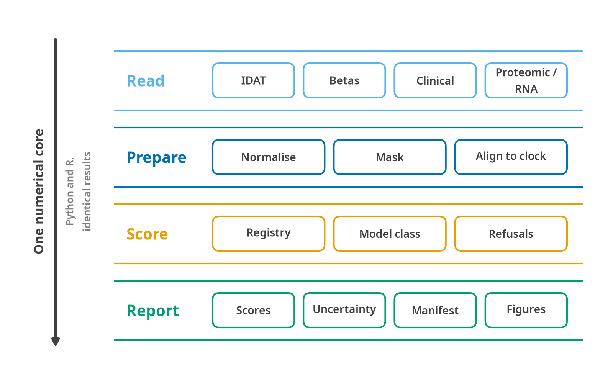
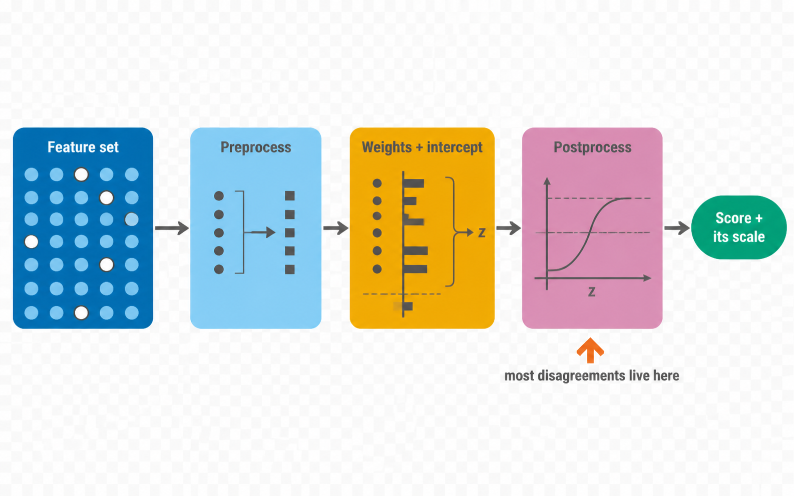
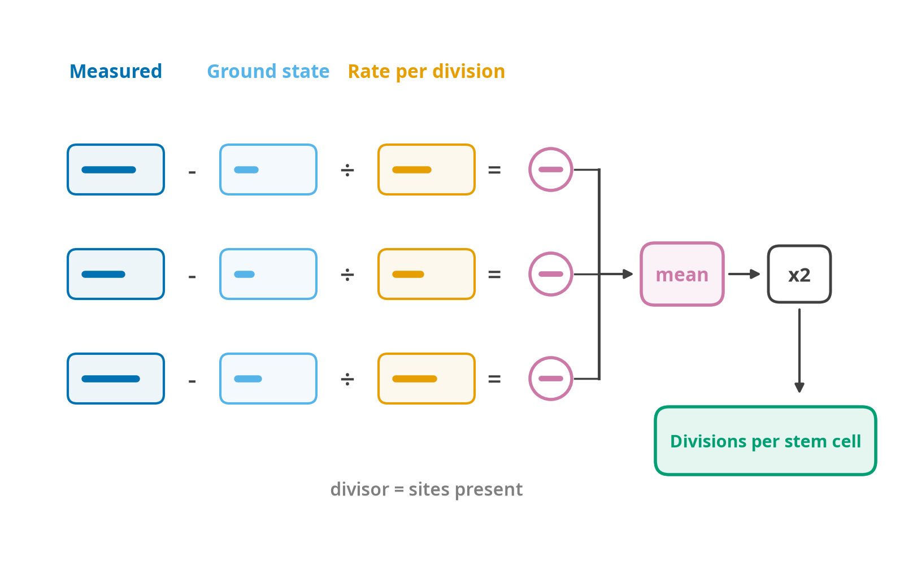

Architecture
What computes what, and how much of it exists
Framework for Aging CLocks, Omics Normalisation and Age scoring.
A single-stop toolkit for computing aging scores from multiomic data, usable identically from Python and R, on CPU or GPU, with a download module that takes public-database accessions and a preprocessing module that turns raw or public data into a scoreable matrix.
This document is the design record. It says which file computes what, what each function takes and returns, and why each decision went the way it did. The science it implements is in The science of aging clocks; every algorithmic claim here cites a section there rather than restating it.
What of this exists
This document was written before the code and is deliberately wider than what ships. Every section whose specification outruns the implementation says so at its head. The table here is the reconciliation, and it is checked against the running package rather than remembered, the counts below come from len(ops.PREPROCESS), registry.load() and the container’s own Modality type.
Current as of v1.0.0.
| Area | Shipped in v1.0.0 | Specified, not built |
|---|---|---|
| Clock catalogue | 161 entries. 35 tier A score offline: 32 ship a coefficient file, 3 (PhenoAge, KDM, homeostatic dysregulation) are formulas with none to ship. 28 tier C are tested scaffolds | The 98 tier B entries carry metadata but no traced coefficients |
| Modalities | DNA methylation, clinical chemistry, RRBS, nanopore, transcriptomics, proteomics | Single-cell as a modality (scAge is a model, not a container type); spatial |
| Inputs | Beta matrix, GEO series matrix, raw IDATs, RRBS, bedMethyl, targeted panels, Olink NPX, SomaScan RFU, bulk counts, clinical tables, ComputAgeBench | — |
| Normalisation | pOOBAH, noob, BMIQ, probe masks (§20 of the science page) | Control-probe dye correction; mLiftOver cross-platform harmonisation |
| Model classes | LinearClock, ClinicalClock, ScaffoldClock, PCLinearClock, AggregationClock, NeuralClock, ScAgeReference |
MultiStageCoxClock, DeconvolutionClock, CompositeClock |
| Preprocess ops | 7: beta_to_m, m_to_beta, scale, rank_normalize, quantile_normalize, binarize, simplex_projection |
The other eight in §4.1 |
| Postprocess ops | 21, plus 24 analytic derivatives for uncertainty propagation and 4 ops explicitly marked non-differentiable | — |
| Uncertainty | Technical SE, conformal prediction intervals, per-probe ICC table, power, consensus | Conformalised quantile regression (split conformal ships instead) |
| Batch | Frozen-reference ComBat: adding a plate cannot move an earlier one | — |
| Download | GEO series and sample, ArrayExpress, SRA/ENA, Zenodo by DOI, Hugging Face, Figshare, PRIDE, MetaboLights, GDC | Credentialed archives (Synapse, EGA, dbGaP, UK Biobank): documented, deliberately not automated |
| Registry storage | One clocks.yaml inside the package, loaded into frozen dataclasses |
The per-clock file tree and pydantic schema of §3 |
| Devices | CPU (numpy) and CUDA (torch), fp64 default | MPS is resolved and refused rather than supported |
| R interface | S3 classes, ggplot2 figures, bit-identical to Python, including the uncertainty and batch verbs | The raw-array chain and the model architectures are Python-only |
Two gaps are worth naming rather than leaving in a cell.
Tier B coefficient provenance is not an engineering task. It is a per-clock literature hunt, find the paper, find the supplement, check the coefficient count against what circulates, record the discrepancy where they differ, and some of the 110 have no public supplement at all. primary_source_traced: false is the honest record of that debt.
The proteomic and transcriptomic chains ship without registry entries. Every published model in both families is licence-restricted, so each would enter as a tier C scaffold. Scoring a proteomic matrix today refuses with “no clocks to score”, which is accurate rather than broken.
Contents
- Scope, decisions and repository layout
- Core engine
- Clock registry
- Algorithms, the complete operation catalogue
- Download module
- Preprocess module
- Scoring, analysis, plots, report
- R package
- Docker
- Testing
- Documentation
- CI/CD and publishing
- Build order
- Open questions
- The layer that says what a score is worth
1. Scope, decisions and repository layout

The R package does not reimplement any of this. It calls the same Python functions through reticulate, which is why the two languages return identical numbers rather than numbers that agree to a tolerance. The stages are separable: a beta matrix that is already normalised enters at Prepare, and a clinical table skips the methylation path entirely. What every route shares is the last stage, where a score is never emitted without the manifest recording how it was produced.
1.1 What each release delivered
| Capability | Ships in 1.0.0 | Later |
|---|---|---|
| DNA methylation clocks | 158 catalogued: linear, PC, GrimAge family, mitotic, deconvolution, SystemsAge, AltumAge | — |
| Clinical chemistry | PhenoAge (both unit variants), KDM, homeostatic dysregulation | — |
| Clock coefficients | 32 bundled, 28 scaffold-only, 98 untraced (§3.7, §4.7) | tier B narrows as sources are traced |
| Raw arrays | full chain: manifest fetch, pOOBAH, noob, BMIQ, probe masks | control-probe dye correction |
| Uncertainty | technical SE, conformal intervals, power, consensus | conformalised quantile regression |
| Batch | frozen-reference ComBat | — |
| Specimen and platform checks | species, specimen type, cell-free DNA refusal, platform bias in years | — |
| Transcriptomics | the tAge chain ships; no registry entries | tAge’s 60 models, licence permitting |
| Proteomics | Olink and SomaScan readers ship; no registry entries | organAging, Oh 2023 organ clocks |
| Single cell | scAge (per-cell likelihood) | pseudobulk, CellBiAge, SpatialAgingClock |
| Foundation models | NeuralClock architecture, safetensors only |
CpGPT as an imputation backend, not a clock |
| Download | GEO, ArrayExpress, SRA/ENA, Zenodo, Figshare, Hugging Face, GDC, PRIDE, MetaboLights; ComputAgeBench loader | Metabolomics Workbench |
| Preprocess | IDAT → beta, series matrix, beta CSV/parquet, clinical chemistry, the RNA-seq and Olink/SomaScan chains | — |
| Compute | CPU and CUDA, FP64 default, FP32 opt-in | MPS validated, ROCm |
| Interfaces | Python API, R API, CLI, Docker (CPU + CUDA) | - |
The v1.0 line is drawn where it is because methylation plus clinical chemistry covers the overwhelming majority of real use, is fully specified in the science notes down to the constants, and has published values available to test against.
Every architecture is written from scratch, with the equations taken from the science notes, §4 rather than from anybody’s source: 15 preprocess ops, 15 postprocess transforms and 10 special forward passes are specified, of which v1.0 implements the seven, nine and zero that its 23 scoring clocks reach for. No clock implementation is imported from another package.
Coefficients are a different matter, because they are fitted data rather than a procedure and cannot be written at all. §3.6 surveys where each set actually comes from and §3.7 sorts them into three tiers by what FALCONAge may distribute. Twenty-eight clocks, the GrimAge and SystemsAge families and DunedinPACE - ship as a complete, tested scaffold with no numbers, because their coefficients are research-use-only or have no traceable public source. §4.7 covers what that means in practice.
1.2 The four architectural decisions
One numerical core, in Python. The R package is a native-feeling front end that calls the Python core through reticulate. This is the design tAge uses (tAge/R/predict.R), and the reason is that “identical results in both languages” is either guaranteed by construction or it is a permanent testing liability. Two native implementations means writing 15 preprocess ops, 15 postprocess transforms and 10 special forward passes twice, then proving on every release that they still agree. One core means the R and Python answers are the same bytes because they are the same computation. GPU support in R comes free. The cost is that R users need a Python environment, which falconage_install() and the Docker image handle.
Quarto for both documentation sites. quartodoc renders the Python API, pkgdown renders the R API, and one Quarto site wraps both with the same theme and navigation. Tutorials are .qmd with Python and R tabs showing the same analysis. The risk is that quartodoc is younger than Sphinx and Quarto 2 (a Rust rewrite) lands late 2026, so the Quarto version is pinned in CI and in the Docker image. Docstrings are numpydoc-format, which means the fallback to Sphinx + pydata-sphinx-theme requires no source changes if the toolchain becomes a problem.
FALCONAge.
| Context | Name |
|---|---|
| PyPI distribution | falconage |
| Python import | import falconage as fa |
| R package | FALCONAge |
| R library call | library(FALCONAge) |
| CLI | falconage <verb> |
| Docker image | falconage:VERSION-cpu, falconage:VERSION-cuda |
| Docs | https://bhagesh-h.github.io/FALCONAge/ |
| Registry namespace | falconage-registry on Hugging Face |
PyPI lowercase follows PEP 8 and PyPI normalisation; R CamelCase follows the cyRAVEN convention. falconage and FALCONAge were both free on PyPI at the time of writing; CRAN availability must still be confirmed with available::available("FALCONAge") before the first submission.
Versioning. One version number governs python/pyproject.toml, r/DESCRIPTION, the Docker tag and the git tag; CI refuses a release when they disagree (§12). The clock registry carries its own independent schema_version and registry_version, because adding a clock should not force a package release and a package release should not silently change which weights a user gets. Every result records both.
1.3 Repository layout
FALCONAge/
├── README.md
├── PUBLISHING.md
├── CITATION.cff
├── LICENSE # GPL-3
├── CHANGELOG.md # shared; r/NEWS.md is generated from it
│
├── python/
│ ├── pyproject.toml
│ ├── README.md # symlink or short pointer to the root README
│ ├── src/falconage/
│ │ ├── __init__.py # public API re-exports, __version__
│ │ ├── _version.py
│ │ │
│ │ ├── core/
│ │ │ ├── device.py # resolve_device, resolve_dtype, DeviceSpec
│ │ │ ├── container.py # FalconData
│ │ │ ├── manifest.py # RunManifest
│ │ │ ├── logging.py # get_logger, verbosity, progress
│ │ │ ├── config.py # FalconConfig, from_yaml, from_env
│ │ │ ├── units.py # UnitRegistry, convert, require_units
│ │ │ └── errors.py # exception hierarchy
│ │ │
│ │ ├── io/
│ │ │ ├── methylation.py # read_betas, read_idat_dir, read_series_matrix
│ │ │ ├── clinical.py # read_clinical
│ │ │ ├── expression.py # read_counts
│ │ │ ├── proteomics.py # read_olink, read_somascan (v1.2)
│ │ │ ├── anndata_io.py # read_h5ad, write_h5ad
│ │ │ └── tables.py # read_sample_table, write_results
│ │ │
│ │ ├── download/
│ │ │ ├── base.py # Downloader ABC, DownloadResult
│ │ │ ├── resolve.py # accession → Downloader dispatch
│ │ │ ├── cache.py # content-addressed cache
│ │ │ ├── transfer.py # resumable HTTP/FTP, checksum, retry
│ │ │ ├── geo.py # GSE/GSM
│ │ │ ├── arrayexpress.py # E-MTAB
│ │ │ ├── sra.py # SRP/SRR/PRJNA
│ │ │ ├── zenodo.py # DOI
│ │ │ ├── figshare.py
│ │ │ ├── huggingface.py
│ │ │ ├── gdc.py # TCGA
│ │ │ ├── pride.py # PXD (v1.2)
│ │ │ ├── metabolights.py # MTBLS, ST (v1.2)
│ │ │ ├── credentialed.py # Synapse/EGA/dbGaP/UKB guidance + hooks
│ │ │ └── metadata.py # source metadata → common sample table
│ │ │
│ │ ├── preprocess/
│ │ │ ├── methylation/
│ │ │ │ ├── idat.py # IDAT parse
│ │ │ │ ├── noob.py
│ │ │ │ ├── bmiq.py
│ │ │ │ ├── sesame.py
│ │ │ │ ├── quality.py # detection p, probe masks
│ │ │ │ ├── platform.py # detect_platform, harmonise_probe_ids
│ │ │ │ └── epicv2.py # aggregate_replicate_probes
│ │ │ ├── clinical.py # validate_ranges, convert_units
│ │ │ ├── expression.py
│ │ │ ├── proteomics.py # v1.2
│ │ │ ├── impute.py # dataset-level imputation
│ │ │ └── qc.py # QCReport
│ │ │
│ │ ├── registry/
│ │ │ ├── schema.py # pydantic models
│ │ │ ├── registry.py # ClockRegistry: list/search/get/filter
│ │ │ ├── weights.py # HF resolution, safetensors load, cache
│ │ │ ├── vocabulary.py # controlled vocabulary
│ │ │ └── data/ # the YAML files (packaged)
│ │ │
│ │ ├── models/
│ │ │ ├── base.py # FalconClock ABC
│ │ │ ├── ops/
│ │ │ │ ├── preprocess.py # the 15 preprocess ops
│ │ │ │ ├── postprocess.py # the 15 postprocess transforms
│ │ │ │ └── functional.py # shared kernels (rank, quantile, simplex)
│ │ │ ├── linear.py # LinearClock, PCLinearClock
│ │ │ ├── cox.py # MultiStageCoxClock (GrimAge family)
│ │ │ ├── neural.py # NeuralClock (AltumAge)
│ │ │ ├── aggregation.py # AggregationClock (mitotic clocks)
│ │ │ ├── deconvolution.py # DeconvolutionClock
│ │ │ ├── composite.py # CompositeClock (SystemsAge, DNAmFitAge)
│ │ │ ├── clinical.py # PhenoAge, KDM, HD
│ │ │ └── species.py # mammalian species-lookup transforms
│ │ │
│ │ ├── score/
│ │ │ ├── predict.py # score()
│ │ │ ├── features.py # feature alignment, clock-level imputation
│ │ │ └── result.py # FalconResult
│ │ │
│ │ ├── analysis/
│ │ │ ├── acceleration.py # absolute, residual, within-group
│ │ │ ├── survival.py # Cox, C-index, time-dependent AUC
│ │ │ ├── association.py # logistic, linear, interactions
│ │ │ ├── reliability.py # ICC, Fisher-Z pooling
│ │ │ ├── benchmark.py # AA1/AA2, MedAE, bias, total score
│ │ │ └── agreement.py # cross-clock correlation, clustering, UMAP
│ │ │
│ │ ├── plot/
│ │ │ ├── theme.py # shared palette and rcParams
│ │ │ ├── age.py # ba_vs_ca, acceleration_density
│ │ │ ├── agreement.py # clock_corr, clock_umap
│ │ │ ├── qc.py # missingness, beta_distribution
│ │ │ ├── benchmark.py # class_bench, medae, bias
│ │ │ ├── survival.py # forest
│ │ │ ├── systems.py # organ radar, system heatmap
│ │ │ └── trajectory.py # timecourse
│ │ │
│ │ ├── report/
│ │ │ ├── html.py # self-contained HTML report
│ │ │ └── templates/
│ │ │
│ │ └── cli/
│ │ ├── __main__.py
│ │ ├── app.py # typer app
│ │ └── commands/ # download, preprocess, score, analyse,
│ │ # bench, clocks, cache, config, report
│ └── tests/
│ ├── unit/ integration/ property/ conformance/
│ └── conftest.py
│
├── r/
│ ├── DESCRIPTION NAMESPACE NEWS.md _pkgdown.yml .Rbuildignore
│ ├── R/
│ │ ├── FALCONAge-package.R # @keywords internal "_PACKAGE" + overview
│ │ ├── zzz.R # .onLoad delayed import, options
│ │ ├── install.R # falconage_install, falconage_config
│ │ ├── bridge.R # py handle, error translation, marshalling
│ │ ├── download.R preprocess.R score.R analysis.R plot.R report.R
│ │ ├── classes.R # falcon_data, falcon_result S3
│ │ ├── clocks.R # list_clocks, clock_info, cite_clock
│ │ ├── cli-options.R # option parser for inst/scripts
│ │ └── utils.R
│ ├── man/ # roxygen-generated
│ ├── vignettes/
│ │ ├── FALCONAge.Rmd methylation.Rmd clinical.Rmd
│ │ ├── download.Rmd gpu.Rmd benchmarking.Rmd clocks.Rmd
│ ├── tests/testthat/
│ └── inst/
│ ├── CITATION
│ ├── scripts/falconage.R # CLI front end
│ └── extdata/ # small example inputs
│
├── registry/ # source of truth, packaged into both
│ ├── schema.yaml
│ ├── vocabulary.yaml
│ ├── clocks/*.yaml # one file per clock
│ └── validate.py
│
├── docs/ # Quarto site
│ ├── _quarto.yml
│ ├── index.qmd installation.qmd quickstart.qmd
│ ├── guide/*.qmd # narrative, Python+R tabs
│ ├── reference/ # quartodoc output (Python)
│ ├── r/ # pkgdown output (R), built in
│ └── _extensions/
│
├── docker/
│ ├── Dockerfile.cpu Dockerfile.cuda
│ ├── entrypoint.sh install_deps.R
│ └── docker-compose.yml
│
├── tests/vectors/ # shared gold-standard IO pairs
│ ├── manifest.yaml
│ └── <clock>/{input.parquet,expected.parquet}
│
└── .github/workflows/
├── python-test.yaml r-cmd-check.yaml docs.yaml
├── docker.yaml release-pypi.yaml release-r.yaml
└── registry-validate.yaml1.4 What actually got laid down
Flatter than the plan in three places, each for the same reason: a directory with one file in it is a directory you have to open to find out it has one file in it.
python/src/falconage/
├── core/ backend.py config.py container.py errors.py
│ logging.py manifest.py units.py
│ tissue.py preanalytical.py
├── io/ __init__.py methylation.py # readers, platform detection
│ bench.py # ComputAgeBench loader
├── preprocess/ __init__.py methylation.py # prepare, qc, EPIC v2, units
│ manifest.py idat.py bmiq.py masks.py # raw-array chain
│ batch.py # frozen-reference ComBat
│ proteomic.py transcriptomic.py # modality chains
├── uncertainty/ __init__.py # SE, conformal, ICC
├── registry/ registry.py data/clocks.yaml # all 161 entries, one file
│ data/probe_icc.csv.gz # reliability table
│ data/platform_bias.csv conformal.csv # derived artefacts
│ data/evidence.yaml # curated associations
├── models/ linear.py clinical.py ops.py pc.py
│ aggregation.py neural.py single_cell.py
├── score/ __init__.py # score(), combine()
├── analysis/ __init__.py # acceleration, cox, icc,
│ # benchmark, power, consensus
├── plot/ __init__.py # public surface + save_all
│ _common.py spec.py colorscheme.yaml # canvas, theme, captions
│ accuracy.py acceleration.py agreement.py
│ qc.py benchmark.py outcomes.py atlas.py
│ uncertainty.py
├── report/ html.py
└── cli/ app.py __main__.py # + report/power/consensus verbs
python/tools/ build_probe_icc.py build_platform_bias.py # derivations
build_conformal.py
r/R/ FALCONAge-package.R zzz.R install.R bridge.R
data.R score.R analysis.R clocks.R download.R
plot.R atlas.R uncertainty.R
docs/ _quarto.yml reference-groups.yml build_docs.py
build_downloads.py build_catalogue.py build_gallery.py
index.qmd clocks.qmd gallery.qmd gpu.md guide/
test/ run_all.py gpu_check.py responsive_check.py
check_versions.py data/ output/ output_figures/Two collapses and one reversal. models/ops/{preprocess,postprocess,functional}.py became one ops.py, because the shared kernels the third file was for are four functions. registry/{schema,weights,vocabulary}.py became registry.py plus the data file: the vocabulary is a frozenset: the schema is the dataclass, and weight resolution is one function because nothing is fetched at run time.
plot/ went the other way, and the original reasoning was wrong. It was kept as one module plus atlas.py on the argument that splitting the figures by subject would make the shared helpers a circular import waiting to happen. It grew to 1,523 lines, an implementation living in a package initialiser, which is the thing an initialiser should not be. The circularity worry was avoidable by naming the problem: the helpers are not shared between figure families: they are shared by them, so they belong in a _common.py that imports from nobody in the package. Each family module imports _common, __init__ imports the families and re-exports, and the dependency graph is a tree. save_all stays in __init__ because orchestrating the families is the one job that legitimately knows about all of them. No public name moved; fa.plot.ba_vs_ca is where it was.
There is no top-level registry/ directory and no tests/vectors/ tree; the catalogue ships inside the package and the gold-standard vectors live beside the tests that assert on them.
2. Core engine
2.1 Device and dtype
falconage/core/device.py
@dataclass(frozen=True)
class DeviceSpec:
device: torch.device # cpu | cuda:N | mps
dtype: torch.dtype # float64 | float32
batch_size: int
backend: Literal["torch", "numpy"]
def resolve_device(
device: str = "auto", # "auto" | "cpu" | "cuda" | "cuda:1" | "mps"
dtype: str = "float64", # "float64" | "float32"
batch_size: int | None = None,
) -> DeviceSpecauto picks CUDA when torch.cuda.is_available(), then MPS, then CPU, and logs the choice, mirroring pyaging’s set_torch_device (pyaging/predict/_pred_utils.py:398). batch_size defaults to 1024 on CPU and is raised to fill available VRAM on CUDA, capped so that the largest PC rotation (125,175 × k for SystemsAge) fits.
FALCONAge diverges here in four ways, three of them deliberate. The module is
core/backend.py, the function isresolve(), andDeviceSpeccarries plain strings with nobatch_sizefield: nothing shipping is large enough to need batching, and a field that is always its default is a field that is wrong the first time it matters.The substantive difference is
auto. It resolves to CPU even when a CUDA device is present, because on the clocks that ship the card loses: a 2,340-feature dot product is a rounding error against the pandas alignment that feeds it, and the transfer is pure cost. Measured at 4.6× slower on an RTX 4060 at 16,384 samples. Picking CUDA because one exists would make the common case several times worse on every machine that has one, silently, so the GPU is opt-in viadevice="cuda"orFALCONAGE_DEVICE=cuda. The numbers are in GPU support.
resolve()also refuses a device it cannot provide rather than falling back. A run asked for a GPU and quietly given a CPU looks like a very slow success, and the user finds out hours later.
FP64 is the default because that is what pyaging uses and what the gold-standard vectors are generated at. FP32 roughly doubles throughput on consumer GPUs, which have poor FP64 rates, and is opt-in. Clocks whose registry entry sets requires_fp64: true are promoted back to FP64 for their own forward pass and a warning is emitted; this covers the PC clocks, whose 78,464- and 125,175-dimensional centring and rotation is ill-conditioned (the science notes, §14.3, §16).
def check_dtype_safety(clock: ClockMeta, spec: DeviceSpec) -> DeviceSpec:
"""Promote to FP64 for clocks that need it. Returns a possibly-modified spec."""Memory guard: before a clock runs, estimate n_samples × n_features × itemsize plus the rotation matrix, and either lower the batch size or raise InsufficientMemoryError with the required figure, rather than letting CUDA OOM mid-run.
2.2 The data container
falconage/core/container.py
FalconData wraps anndata.AnnData rather than replacing it, so the on-disk artefact is a plain .h5ad that both languages and every scverse tool can read.
class FalconData:
adata: AnnData # X = primary modality, obs = samples, var = features
modality: str # "methylation" | "clinical" | "expression" | "proteomics"
platform: str | None # "illumina_450k" | "illumina_epic_v2" | ...
species: str # "homo_sapiens" | ...
units: dict[str, str] # feature → unit, for clinical chemistryConventions, matching pyaging’s AnnData slot contract and extending it:
| Slot | Content |
|---|---|
X |
samples × features, the primary modality |
obs |
age, sex, tissue, condition, subject_id, timepoint, time, status, plus predictions after scoring |
var |
feature_id, id_type, platform, chromosome, position |
obsm["X_<clock>"] |
transient per-clock feature slice, deleted after scoring unless keep=True |
layers["<modality>"] |
a second modality on the same features |
uns["falconage"] |
the run manifest |
uns["<clock>_percent_na"], uns["<clock>_missing_features"], uns["<clock>_metadata"] |
per-clock diagnostics |
Multi-modality with different feature spaces (850K methylation probes alongside 3,000 proteins) uses MuData, with FalconData.from_mudata() / .to_mudata(). A single FalconData always has one primary feature space.
Constructors:
FalconData.from_dataframe(df, modality, platform=None, metadata_cols=(), units=None)
FalconData.from_anndata(adata, modality, ...)
FalconData.read_h5ad(path)
FalconData.write_h5ad(path)from_dataframe takes samples in rows and features in columns, splits metadata_cols into obs, and preserves df.index as sample identifiers. This is the same signature as pyaging’s df_to_adata minus the imputation, which moves to the preprocess module where it belongs.
2.3 Run manifest
falconage/core/manifest.py
Everything needed to reproduce a run, written into uns["falconage"] and into a sidecar run_manifest.json next to the results.
@dataclass
class RunManifest:
falconage_version: str
registry_version: str
registry_schema: str
python_version: str
r_version: str | None # set when the call came through reticulate
platform: str # OS, arch
device: str
dtype: str
torch_version: str
cuda_version: str | None
timestamp: str # ISO 8601, UTC
command: str # the resolved call
config: dict # fully resolved, defaults expanded
inputs: list[InputRecord] # path, sha256, n_samples, n_features
clocks: list[ClockRun] # name, version, weights_sha256, percent_na, warnings
warnings: list[str]ClockRun.weights_sha256 is what makes a result auditable: two runs that report the same score for the same clock either used the same weights or the manifest says they did not.
2.4 Logging and verbosity
falconage/core/logging.py
Three levels, matching cyRAVEN’s cyRAVEN.verbose option so the two front ends behave the same:
| Level | Python | R |
|---|---|---|
none |
logging.CRITICAL |
options(FALCONAge.verbose = "none") |
inform (default) |
logging.INFO, indented progress |
"inform" |
debug |
logging.DEBUG, per-op timings and shapes |
"debug" |
Progress bars via rich on a TTY, plain line output otherwise, suppressed entirely under none. Every message goes through the logger, so logging.disable() in Python and suppressMessages() in R both work.
2.5 Configuration
falconage/core/config.py
Precedence, lowest to highest: packaged defaults → user config file (~/.config/falconage/config.yaml) → environment (FALCONAGE_*) → explicit function arguments.
# ~/.config/falconage/config.yaml
device: auto
dtype: float64
batch_size: 1024
verbose: inform
cache_dir: ~/.cache/falconage
registry_version: "1.1.0" # pin to make a project reproducible
hf_token: null
max_download_gb: 502.6 Units
falconage/core/units.py
The single most common source of wrong answers in this field is a clinical biomarker in the wrong unit (the science notes, §16). The unit registry makes that a hard error.
class UnitRegistry:
def convert(self, value: ArrayLike, marker: str, frm: str, to: str) -> ArrayLike
def canonical(self, marker: str, variant: str) -> str
def require(self, markers: Sequence[str], units: dict[str, str] | None) -> dict[str, str]require raises MissingUnitsError naming every marker whose unit was not declared. There is no default and no inference from magnitude, a creatinine of 80 is plausible as both µmol/L and an absurd mg/dL, and guessing is how the 88× error happens. Conversions carried:
| Marker | Units | Factor |
|---|---|---|
| albumin | g/L ↔︎ g/dL | ×10 |
| creatinine | µmol/L ↔︎ mg/dL | ×88.42 |
| glucose | mmol/L ↔︎ mg/dL | ×18.016 |
| CRP | mg/L ↔︎ mg/dL | ×10 |
| total/HDL/LDL cholesterol | mmol/L ↔︎ mg/dL | ×38.67 |
| triglycerides | mmol/L ↔︎ mg/dL | ×88.57 |
| urea/BUN | mmol/L ↔︎ mg/dL | ×2.801 |
| uric acid | µmol/L ↔︎ mg/dL | ×59.48 |
| bilirubin | µmol/L ↔︎ mg/dL | ×17.1 |
2.7 Error hierarchy
falconage/core/errors.py
FalconError
├── ConfigurationError
│ ├── MissingUnitsError
│ └── InvalidDeviceError
├── DataError
│ ├── FeatureMismatchError # 100% of a clock's features absent
│ ├── ExcessiveMissingnessError # above the configured threshold
│ ├── PlatformMismatchError # EPIC v2 probes not aggregated, etc.
│ ├── MissingCovariateError # clock needs age/sex and it is not there
│ └── OutOfRangeError # beta outside [0,1], negative counts
├── RegistryError
│ ├── UnknownClockError
│ ├── WeightsUnavailableError
│ └── SchemaValidationError
├── DownloadError
│ ├── AccessionNotFoundError
│ ├── ChecksumMismatchError
│ └── CredentialsRequiredError
└── ComputeError
├── InsufficientMemoryError
└── NumericalInstabilityErrorEvery error carries .remedy, a one-sentence statement of what to do about it, which the R bridge surfaces as the condition message and the CLI prints after the traceback.
3. Clock registry
3.1 Why the registry is a separate artefact
The registry is versioned independently of the package, packaged into both language distributions, and validated in its own CI job. That separation exists because adding a clock and releasing software are different events with different risk profiles: a user pinning registry_version: "1.0.0" gets the same coefficients in a year regardless of package upgrades, and a registry fix does not require a PyPI release.
3.2 Schema
v1.0 stores this differently. All 161 entries live in one file,
python/src/falconage/registry/data/clocks.yaml, loaded into frozen dataclasses byregistry/registry.py. There is noregistry/directory at the repository root, no file per clock, and no pydantic.The per-clock tree below is the right shape for a registry that outside contributors edit concurrently, one file per pull request, no merge conflicts. At 161 entries maintained by one author it bought nothing and cost a directory walk on every import, plus 161 files to keep a schema version in step across. The single file is 161 entries the loader validates in one pass, and it travels inside the wheel so a clock catalogue is never a download. Pydantic went the same way: the fields are flat, the loader coerces and defaults them in about forty lines, and a runtime dependency that exists to check a file the package itself ships is a dependency earning nothing.
The field vocabulary below is otherwise accurate: it is what the loader reads.
# one entry in falconage/registry/data/clocks.yaml
id: grimage2
display_name: GrimAge2
schema_version: "1.0"
clock_version: "1.0.0"
provenance:
year: 2022
citation: "Lu AT, Binder AM, Zhang J, et al. DNA methylation GrimAge version 2. Aging. 2022;14(23):9484-9549."
doi: "10.18632/aging.204434"
last_author: "Steve Horvath"
journal: "Aging"
approved_by_author: false
evidence: paper-confirmed # author | code | paper | supplement-confirmed
license:
spdx: null
research_only: true
redistributable: true
notes: "Research use only; commercial use requires a licence from UCLA."
biology:
data_type: dna_methylation
species: homo_sapiens
tissue: [whole_blood]
platform: [illumina_450k]
population: older_adults
generation: second # first|second|pace|causal|mitotic|system|foundation
predicts: [mortality_risk]
training_target: [mortality]
output:
unit: years
scale_type: age_years # governs which downstream operations are legal
plausible_range: [0, 150] # a value outside this is flagged, not clipped
features:
n_features: 1032
id_type: cpg_illumina
requires_covariates: [age, sex]
reference_values: true
architecture:
kind: multi_stage_cox
sub_models: # order is load-bearing, see §4.3
- {name: GDF15, n_features: 138}
- {name: B2M, n_features: 92}
- {name: CystatinC, n_features: 88}
- {name: TIMP1, n_features: 43}
- {name: ADM, n_features: 187}
- {name: PAI1, n_features: 211}
- {name: Leptin, n_features: 187}
- {name: PACKYRS, n_features: 173}
- {name: LogCRP, n_features: 132}
- {name: A1C, n_features: 87}
covariate_order: [age, female]
requires_fp64: false
preprocess:
- op: fill_nan_with_reference
postprocess:
- op: cox_to_years
params:
cox_mean: 15.370829484122
cox_std: 1.09534876966487
age_mean: 66.0943807965085
age_std: 9.05974444998421
weights:
uri: "hf://bhagesh-h/falconage-registry/clocks/grimage2/weights.safetensors"
sha256: "..."
size_bytes: 8421376
reference_uri: "hf://bhagesh-h/falconage-registry/clocks/grimage2/reference.safetensors"
reference_sha256: "..."
reliability:
technical_icc: {value: 0.83, source: "Higgins-Chen 2022", n: null}
biological_icc: {value: 0.61, source: "TranslAGE 2025", n: null}
benchmark:
computage:
aa2_passed: null
aa1_passed: null
medae: null
median_bias: null
total_score: null
gold_standard:
input: "tests/vectors/grimage2/input.parquet"
expected: "tests/vectors/grimage2/expected.parquet"
tolerance: 1.0e-6
source: "pyaging 0.3.0, FP64, CPU"
known_discrepancies: []3.3 The discrepancy field is load-bearing
The science, §15.2 documents the eleven clocks where the published paper and the coefficient set in circulation disagree. Every implementation in the field silently inherits one side of each disagreement. FALCONAge records both and warns at score time:
known_discrepancies:
- field: n_features
paper_says: 96
implementation_has: 251
source: "pyaging audit_report.md"
resolution: implementation
note: >
The paper and supplement report a 96-CpG primary ultrasound model. The
third-party coefficient file everyone uses carries 251 CpGs and cannot be
mapped to any of the paper's six LASSO variants. No author-hosted 251-CpG
model was located.The nine to encode at minimum: bohlin (96 vs 251), cvdwesterman (1,305 vs 235), zhangmortality (integer quartile count vs continuous weighted sum), yingcausage (586 vs 585), yingdamage (1,090 vs 1,089), yingadaptage (1,000 vs 999), senchronoage (188 vs 187), sencultureage (141 vs 142), senmortalityage (89 vs 91), plus bocklandt (2 CpGs vs 1) and downsyndrome (EWAS estimates repurposed as a zero-intercept score).
Warning behaviour is a config knob: discrepancy_warnings: once | always | never, defaulting to once per clock per session.
3.4 Controlled vocabulary
registry/vocabulary.yaml fixes the allowed values for data_type, species, tissue, platform, population, generation, predicts, training_target, unit, scale_type and architecture.kind. This is the mechanism that kept pyaging’s 173 entries coherent through an audit that collapsed 94 free-text tissue strings to 30 controlled terms (pyaging/clocks/metadata/audit_report.md). registry/validate.py fails CI on any value outside the vocabulary, any missing required field, any weight URI without a checksum, and any clock without a gold-standard vector.
3.5 Registry API
falconage/registry/registry.py
class ClockRegistry:
@classmethod
def load(cls, version: str | None = None) -> ClockRegistry
def get(self, clock_id: str) -> ClockMeta
def list(self) -> list[str]
def search(self, query: str) -> list[ClockMeta] # free text over name, citation, notes
def filter(self, **criteria) -> list[ClockMeta] # data_type=, species=, generation=, ...
def by_doi(self, doi: str) -> list[ClockMeta]
def compatible_with(self, data: FalconData,
min_coverage: float = 0.8) -> list[ClockMeta]
def cite(self, clock_id: str, style: str = "plain") -> strcompatible_with is the function that makes a 173-clock registry usable: hand it a loaded dataset and it returns the clocks whose species, platform and feature coverage actually match, sorted by coverage. This replaces the current field practice of running everything and reading the missingness column afterwards.
3.6 Coefficient provenance and the three availability tiers
A clock is two things: an architecture, which is a procedure described in a paper, and a coefficient set, which is data produced by fitting that procedure to a cohort. FALCONAge writes every architecture from scratch. It cannot write a coefficient set from scratch, because there is no procedure that regenerates Horvath’s 353 weights without Horvath’s training data.
So the question for each clock is only ever where do its numbers come from and may we ship them. Surveying pyaging’s 173 notebooks for the URL each one fetches gives the answer for the 159 methylation and clinical clocks in v1:
| Provenance | n | Traceable to the authors |
|---|---|---|
| Publisher supplementary file | 31 | yes, the paper’s own Additional file |
| Author’s own code repository | 48 | yes |
| Author-hosted file share (Box, Google Drive) | 24 | yes, on fragile links |
| Copied package-to-package, primary source unrecorded | 37 | not without tracing |
| No public primary source | 13 | no |
| Embedded inline, small enough to read off the paper | 6 | yes |
The 37 in the fourth row are the reason the eleven discrepancies in §3.3 exist. epiTOC2’s coefficients in pyaging are a file lifted from biolearn’s repository; the McCartney scores and most of the deconvolution panels are the same story. Copying a copy is how a transcription error becomes a field-wide convention, and tracing each back to its supplement is the only way to find out which reading is right.
3.7 The three tiers
Every registry entry carries availability, one of three values. This governs what ships, what is fetched, and what the user has to do.
| Tier | n | Architecture | Coefficients | User action |
|---|---|---|---|---|
| A - open | 38 | ships | ship, extracted from the primary source and redistributed | none |
| B - fetch on first use | 95 | ships | fetched from the author’s URL at first use, cached, licence printed once | none, but needs network once |
| C - permission required | 28 | ships | never fetched; the user obtains them and points FALCONAge at a local file | obtain a licence or file |
Tier A is where the coefficient set came from a publisher supplement or a permissively licensed author repository and may be redistributed. Includes PhenoAge, KDM and homeostatic dysregulation, which need no network at all.
Tier B is where the coefficients are public but FALCONAge has no clear right to re-host them, or where the primary source has not yet been traced. The scaffold ships; the numbers arrive on first use. Forty-eight of these are author repositories whose licences have not been individually reviewed and will move to A as each is checked.
Tier C is the subject of §4.7.
# in every registry entry
availability: B
coefficient_source:
tier: T2
url: "https://github.com/rsinghlab/AltumAge/raw/main/example_dependencies/..."
format: csv
sha256: "..."
extractor: extractors/altumage.py
licence: "MIT (repository)"
redistributable: true
retrieved: "2026-08-07"
primary_source_traced: trueprimary_source_traced: false is a visible debt, counted in the registry validation report, and falconage clocks list --untraced prints them.
3.8 Coefficient extraction
registry/extractors/. One small script per clock, or per family where the format is shared. Each reads the primary source in whatever shape it was published, xlsx, csv, a zip of csvs, an RData object, a supplementary PDF table, and emits a normalised two-column file plus a provenance record.
registry/extractors/
├── _base.py # fetch, checksum, normalise, write, record
├── horvath2013.py # Springer MOESM3 csv
├── hannum.py # Elsevier mmc2.xlsx, sheet 2, cols B:C
├── ying.py # Nature Aging MOESM6 zip, three clocks in one archive
└── ...class Extractor(ABC):
clock_id: str
source_url: str
expected_sha256: str
expected_n_features: int
@abstractmethod
def parse(self, raw: bytes) -> pd.DataFrame: # feature_id, coefficient
...
def run(self) -> ExtractionResult:
# fetch -> verify checksum -> parse -> assert n_features -> assert no
# duplicate feature ids -> compare against any prior extraction -> writeTwo assertions do most of the work. expected_n_features catches a supplement whose layout changed or a sheet index that was off by one. The comparison against the prior extraction turns an upstream file being silently revised into a failed CI run rather than a changed result.
Diffing against the field. For every clock where pyaging, biolearn, computage or methylCIPHER also carries coefficients, extraction runs a comparison and writes the result to registry/diffs/<clock>.md: features present in one and not the other, coefficients differing beyond 1e-9, and a verdict. Disagreements are published rather than resolved silently. This is what turns the eleven known discrepancies from inherited folklore into a documented finding, and it is expected to surface more.
3.9 Weight loading
falconage/registry/weights.py
def resolve_weights(meta: ClockMeta, cache_dir: Path | None = None) -> Path
def load_weights(meta: ClockMeta, spec: DeviceSpec) -> dict[str, torch.Tensor]
def register_local_weights(clock_id: str, path: Path, sha256: str | None = None) -> NoneRules:
- safetensors only.
torch.load(weights_only=False), which pyaging uses (pyaging/predict/_pred_utils.py:90), executes arbitrary code from a downloaded file. Architecture lives in the registry YAML and inmodels/; tensors live in safetensors; nothing pickled is ever loaded. - Checksum verified against the registry before use; a mismatch raises rather than warns.
- Hugging Face cache for tier A, the same cache for tier B, so weights are shared with other tools and survive a reinstall.
- Offline mode:
FALCONAGE_OFFLINE=1uses only what is cached and raisesWeightsUnavailableErrornaming the missing clock rather than attempting a network call. - Bundling: nothing over 1 MB ships inside the PyPI or CRAN artefact. The clinical-chemistry sets are the exception. PhenoAge is ten numbers, so that path works with no network at all.
- Licence surfacing: tier B prints the source licence once per clock per session on first fetch. Tier C prints the obtain-it-yourself instructions.
4. Algorithms, the complete operation catalogue

The shape is the field’s, not this package’s: the reviews that survey it describe the same four parts [59] [60].
Every clock in the registry is expressible as select features → preprocess ops → architecture forward → postprocess ops, with ten exceptions that need their own forward pass (§4.3). The ops are the vocabulary; implementing all of them is what makes adding a clock a YAML edit rather than a code change.
The weights are the part everybody agrees on, because they are published. The disagreements between implementations of the same clock are almost all in the last box: whether an anti-log is applied, which of two published transforms was meant, whether an intercept was already folded into the coefficients. That is why the registry stores the postprocess chain as declared data rather than burying it in each model class, and why the clocks whose packaged coefficients contradict their own paper carry the discrepancy as a warning at score time.
v1.0 implements seven of the fifteen preprocess ops below and nine postprocess transforms, the ones the 23 scoring clocks reach for. The rest are specified and unbuilt, because each is needed by exactly one clock family whose coefficients are not redistributable, and an op with no reachable test vector is an op that is wrong in a way nobody will notice. They are kept here because the vocabulary is the point: when a coefficient set does arrive, adding the clock stays a registry edit.
4.1 Preprocess ops
falconage/models/ops.py, dispatched through PREPROCESS and applied by apply_chain().
They are plain functions of (x, xp, **params), not nn.Module subclasses as originally specified. xp is the array module the device resolver handed back, numpy or torch, so one implementation serves both backends and the CPU path never imports torch. An nn.Module would have forced torch on every install for a 500-CpG dot product that numpy finishes before torch has finished importing. All are batched and vectorised; none contains a Python loop over samples. Source for each is Appendix E.
def apply_chain(x, chain: Sequence[dict], table: dict, *, xp) -> Any:
"""Run an ordered op list from a registry entry. Order is load-bearing:
beta_to_m then scale is not scale then beta_to_m."""Shipped: beta_to_m, m_to_beta, scale, rank_normalize, quantile_normalize, binarize, simplex_projection. The full specified catalogue follows; the shipped seven cover the first, third, fifth, sixth, ninth and tenth rows in substance under more general names.
| Op | Computation | Stored params | Clocks |
|---|---|---|---|
identity |
x |
- | default |
fill_nan_with_reference |
where(isnan(x), ref, x) |
ref[n_features] |
~90, the LinearReferenceClock family |
scale_median |
(x − median) / std |
median[], std[] |
AltumAge, CpGPTGrimAge3 |
scale_mean |
(x − mean) / std |
mean[], std[] |
CpGPTPCGrimAge3 |
scale_row |
(x − rowmean) / rowstd, guarding zero SD |
- | ZhangEN, ZhangBLUP |
quantile_normalize_gold |
rank map onto sorted gold means, then column subset | gold[20000], idx[] |
DunedinPACE |
quantile_normalize_scale_gold |
as above, then (x − gold_mean)/gold_std, then subset |
gold[], gold_std[], idx[] |
Stubbs |
tpm_log1p |
log1p(1e6 · (1000·x/len) / rowsum), then subset |
lengths[], idx[] |
OcampoATAC1/2 |
binarize_row_median |
mask zeros, threshold at each row’s non-zero median | - | BiTAge |
median_fill_rank |
fill NaN with global median, then per-row average ranks | - | Pasta, PastaMouse, REG |
mean_over_present |
mean of entries != -1 per row |
- | epiTOC1, HypoClock, epiCMIT×2 |
quantile_over_present |
q-quantile of entries != -1 per row |
q=0.95 |
stemTOC, stemTOCvitro |
nan_to_zero |
nan_to_num(x, 0) |
- | epiTOC2, epiTOC3 |
autosomal_zscore |
z-score every probe against that sample’s autosomal mean and SD | autosome_idx[] |
XChrom, YChrom |
expand_with_reference |
scatter the provided features into a wider reference vector | full_ref[], idx[] |
PastaMouse |
Three of these need care.
quantile_normalize_gold. The DunedinPACE gold standard is 20,000 probes, of which only 173 are scored; the other 19,827 exist to define the sample’s rank distribution (the science notes, §4.8). Dropping them produces a plausible wrong number, so the op raises FeatureMismatchError when background coverage falls below a configurable 90%. Vectorised form:
sorted_gold = torch.sort(gold)[0] # [20000]
q_idx = torch.linspace(0, len(sorted_gold) - 1, x.shape[1]).long()
order = torch.argsort(x, dim=1) # [B, F]
out = torch.empty_like(x)
out.scatter_(1, order, sorted_gold[q_idx].expand_as(x))
return out[:, self.scoring_idx]One argsort and one scatter_ per batch, replacing pyaging’s per-row Python loop (pyaging/models/_models.py:255).
median_fill_rank. Average ranks with tie handling. pyaging’s implementation is a nested while loop per row and is the slowest path in that package. The vectorised form uses the double-argsort identity for ordinal ranks and a segment-mean over unique_consecutive for ties:
order = torch.argsort(x, dim=1)
ordinal = torch.empty_like(order)
ordinal.scatter_(1, order, torch.arange(x.shape[1], device=x.device).expand_as(order))
# tie correction: for each run of equal sorted values, replace with the run's mean rankautosomal_zscore. Mean and SD over autosomal probes only, computed per sample with NaN masking, then applied to all probes including the sex chromosomes (the science notes, §3.1).
4.2 Postprocess transforms
falconage/models/ops/postprocess.py. Scalar in, scalar out, applied elementwise over the batch. Constants come from the science notes §4.20 and §5.
| Op | Formula | Params | Clocks |
|---|---|---|---|
identity |
y |
- | most |
anti_log_linear |
y<0: (1+A)eʸ − 1 ; y≥0: (1+A)y + A |
adult_age=20 |
Horvath2013, SkinAndBlood, PedBE, Han, PCHorvath2013, PCSkinAndBlood, IntrinClock, CorticalClock, Pipek×3 |
anti_log_linear_months |
as above with A=48, then /12 |
adult_age=48 |
Wu |
anti_logp2 |
eʸ − 2 |
- | Mammalian1 |
anti_log |
eʸ |
- | MammalianLifespan |
anti_log_log |
e^(−e^(−y)) |
- | Mammalian2 relative-age step |
mortality_to_phenoage |
1 − exp(−exp(y)(e^{120λ}−1)/λ) then 141.50225 + ln(−0.00553·ln(1−m))/0.090165 |
lambda=0.0192 |
PhenoAge |
cox_to_years |
((y−μ_c)/σ_c)·σ_a + μ_a |
four constants | GrimAge, GrimAge2, CpGPTGrimAge3, CpGPTPCGrimAge3 |
petkovich_blood |
((y+1.712)/0.1666)^(1/0.4185) / 30.5 |
- | Petkovich |
stubbs_multitissue |
(exp(0.1207y² + 1.2424y + 2.5440) − 3) · 7/30.5 |
- | Stubbs |
divide |
y / d |
d |
Meer (30.5), Bohlin (7), EPICGA (7) |
sigmoid |
1/(1+e^{−y}) |
- | McCartney ×6, MammalianFemale, CVDWesterman, ADBahadoSingh |
one_minus |
1 − y |
- | HypoClock |
add_constant |
y + c |
c |
REG, Lin (+12.2169841), Ying ×3 |
scale_and_shift |
y·s + o·s |
s, o |
Pasta, PastaMouse |
mortality_to_phenoage clamps the mortality score to [1e-12, 1 − 1e-12] before the logarithm, following mcp-phenoage-clock (mcp-phenoage-clock/src/phenoage.ts), and records clamped: true in the result when it fires, an extreme biomarker combination that saturates the Gompertz CDF is information, not an implementation detail.
Intercept convention. ComputAge and biolearn carry the clock intercept inside the transform lambda; pyaging bakes it into the nn.Linear bias. FALCONAge normalises on import: the intercept always lives in the linear bias, and add_constant is reserved for genuine post-hoc offsets that the source publishes separately. The registry records intercept_source: bias | transform for each imported clock so the normalisation is auditable.
4.3 Model classes
falconage/models/
class FalconClock(nn.Module, ABC):
meta: ClockMeta
features: list[str]
reference_values: Tensor | None
def preprocess(self, x: Tensor) -> Tensor # composed from meta.preprocess
@abstractmethod
def core(self, x: Tensor, ctx: ClockContext) -> Tensor
def postprocess(self, y: Tensor) -> Tensor # composed from meta.postprocess
def forward(self, x: Tensor, ctx: ClockContext) -> TensorClockContext carries what a clock may need beyond its feature matrix, age, sex, species, and the outputs of other clocks it depends on:
@dataclass
class ClockContext:
age: Tensor | None
female: Tensor | None # 1.0 / 0.0; unknown is an error, never 0.5
species: Tensor | None # one-hot for mammalian clocks
upstream: dict[str, Tensor] # e.g. grimage for DNAmFitAgeSex encoding deserves its own note. ComputAge maps unknown sex to 0.5 (ComputAge/computage/models_library/model.py), which silently produces a half-male half-female prediction. FALCONAge raises MissingCovariateError and offers sex_unknown="error" | "impute_from_methylation" | "half", where the middle option runs XChrom/YChrom first and the last must be chosen deliberately.
| Class | Core computation | Clocks | v1.0 |
|---|---|---|---|
LinearClock |
xW + b |
~120 | shipped |
ClinicalClock |
PhenoAge / KDM / HD on tabular biomarkers | 3 | shipped |
ScaffoldClock |
refuses, and says where the coefficients come from | the 28 tier C clocks | shipped |
PCLinearClock |
((x − μ)R)W + b |
PCHorvath2013, PCHannum, PCPhenoAge, PCSkinAndBlood, PCDNAmTL, PCGrimAge | specified |
MultiStageCoxClock |
sub-linear-models → ordered concat with covariates → Cox layer | GrimAge, GrimAge2, CpGPTGrimAge3, CpGPTPCGrimAge3 | specified |
NeuralClock |
arbitrary network from a registry-declared spec | AltumAge | specified |
AggregationClock |
mean / quantile / transmission-model reduction | epiTOC1/2/3, stemTOC×2, HypoClock, epiCMIT×2 | specified |
DeconvolutionClock |
pseudo-inverse → simplex projection → column select | 6-cell and 12-cell EPIC | specified |
CompositeClock |
multiple sub-clocks combined by a declared rule | SystemsAge ×12, DNAmFitAge | specified |
SpeciesClock |
split CpG block from species one-hot, species-dependent inverse transform | Mammalian ×9 | specified |
SexScoreClock |
autosomal z-score → sex-chromosome projection | XChrom, YChrom | specified |
ScaffoldClock is the class that is not in the original design and turned out to matter most. Every “specified” row above is needed by a clock family whose coefficients cannot be redistributed, so writing the class first would produce code with no real answer to test against. Instead the registry entry, the feature list, the transform chain and the expected shapes all ship, build() returns a ScaffoldClock, and calling it raises WeightsUnavailableError naming the laboratory to ask, the licence that applies, and the open clocks that answer the same question. A silent skip would leave a results table with a column quietly missing.
4.4 The ten special forward passes
Each gets an explicit implementation and its own gold-standard vector.
1. GrimAge / GrimAge2 (models/cox.py). Ten (v2) or eight (v1) sub-linear-models on disjoint feature index sets, then a fixed concat order, then the Cox layer, then cox_to_years. The order is [GDF15, B2M, CystatinC, TIMP1, ADM, PAI1, Leptin, PACKYRS, (LogCRP, A1C), Age, Female] and is load-bearing, the Cox coefficients are positional (pyaging/models/_models.py:1742). The registry declares the order; a mismatch between declared and stored sub-model count fails validation.
2. PCGrimAge. Centre 78,464 CpGs, rotate to 1,933 PCs, append Female and Age, run eight PC-space sub-clocks, then the Cox layer. requires_fp64: true.
3. CpGPTPCGrimAge3. Scale → split age from the 30 proxies → rotate 30 → 29 PCs → concat → rescale the PC block with a second mean/std pair → linear → cox_to_years. The two-stage scaling is not a mistake in the source; both scalers are stored.
4. DNAmFitAge. Split the batch by sex, run GaitF/GaitM, GripF/GripM and a shared VO2Max, standardise each with the published sex-specific offset and slope, then a sex-specific Klemera–Doubal layer, then recombine in the original row order. The eight constants (the science notes, §4.17) live in the registry, not in code.
5. Mammalian clocks (models/species.py). Input is [CpGs | species_one_hot] with the one-hot width declared per clock (1,756 for clock-2 variants, 1,707 for clock-3). The species index selects gestation time, average maturity age and maximum lifespan from a packaged AnAge table, and the inverse transform is clock-specific:
clock 1: age = exp(ŷ) − 2
clock 2: age = e^(−e^(−ŷ)) · (max_age + gestation) − gestation
clock 3: m̂ = 5 (gestation / maturity)^0.38
ŷ ≥ 0 : age = m̂ (maturity + gestation)(ŷ + 1) − gestation
ŷ < 0 : age = m̂ (maturity + gestation) e^ŷ − gestationA species not in the AnAge table raises rather than falling back to a default.
6. SystemsAge (models/composite.py). Seven steps (the science notes, §4.16): centre and rotate 125,175 CpGs → project onto the system vector → 11 per-system linear modules → a separate PC→age model with a quadratic correction then /12 → concat the 12-vector → optional composite PCA layer → affine calibration ((raw − c₀)/c₁)·c₃ + c₂ → /12. Twelve registry entries share one weight file and differ only in prediction_index (0–10, or −1 for the composite), so the weights are loaded once and cached across the twelve.
7. Deconvolution (models/deconvolution.py). Pseudo-inverse of the signature matrix, then exact Euclidean projection onto the probability simplex, then column selection. The projection is already batched in pyaging and that implementation is kept:
sorted_v, _ = torch.sort(p_raw, dim=1, descending=True)
cssv = torch.cumsum(sorted_v, dim=1)
inds = torch.arange(1, n + 1, device=..., dtype=...)
rho = (sorted_v - (cssv - 1) / inds > 0).sum(dim=1) - 1
theta = (cssv[torch.arange(B), rho] - 1) / (rho.to(dtype) + 1)
p = torch.clamp(p_raw - theta.unsqueeze(1), min=0)The twelve 12-cell entries and six 6-cell entries share a weight file and differ by cell_index. A convenience wrapper deconvolve(data, panel="epic_12cell") returns all proportions as one frame, which is what users actually want.
8. epiTOC2 / epiTOC3. tnsc = (2/k) Σ_c (β_c − β₀_c) / (δ_c(1 − β₀_c)), with per-CpG δ and β₀ vectors stored as weights and a guard against δ(1−β₀) == 0.

This is not a weighted sum with a different name. Each site is inverted on its own: the drift observed since the ground state is divided by that site’s drift per division, which turns a methylation fraction into a division count. Only then are the per-site estimates averaged, and k is the number of sites actually present rather than the number the clock declares, so a missing site drops out of both the sum and the divisor instead of contributing a zero. The factor of two converts from the per-allele rate to divisions per stem cell.
9. XChrom / YChrom. Autosomal z-score, then Σ (z_sex − mean) · coef over the sex-chromosome probe subset. Exposed both as clocks and through estimate_sex(data) -> DataFrame[x_score, y_score, predicted_sex, confidence], since sex estimation is a preprocessing need as much as a clock.
10. PastaMouse. Expand the mouse feature vector into the full 8,113-gene human space using reference values for human-only genes, then run the shared Pasta forward.
4.5 Clinical chemistry clocks
falconage/models/clinical.py. These are not methylation clocks and do not share the tensor path; they operate on a tabular biomarker frame and are implemented in a way that mirrors BioAge/R/ so the numbers can be checked against it directly.
PhenoAge. Two variants, selected explicitly.
def phenoage(
data: pd.DataFrame,
units: Literal["si", "conventional"], # no default
variant: Literal["levine2018", "liu2019"] = "levine2018",
) -> pd.DataFrame # phenoage, mortality_score, phenoage_advance, clampedThe two coefficient sets and their Gompertz constants are in the science notes §5.1 and are stored in the registry, not in code. units has no default because the SI and conventional parameterisations are not interconvertible by scaling the inputs, the coefficients differ too. The 0.090165 constant is the corrected one; BioAge’s April 2026 commit fixed a widespread 0.09165 and the test suite pins the corrected value.
KDM. Fit-then-project, with the fit reusable:
def kdm_fit(train: pd.DataFrame, biomarkers: list[str], age_col: str = "age",
weights: str | None = None) -> KDMFit
def kdm_project(data: pd.DataFrame, fit: KDMFit, s_ba2: float | None = None) -> pd.DataFrame
def kdm(data, biomarkers, fit=None, by_sex=True) -> pd.DataFrameThe math is the science notes §4.4, transcribed from BioAge/R/kdm_calc.R including the details that matter: r_char from the ratio of two weighted sums, s_r from the age range and biomarker count, the s_BA² correction, and the rule that a sample with more than two missing biomarkers returns NA rather than a partial score. Packaged NHANES III/IV fits ship as a KDMFit so the common case needs no training data.
Homeostatic dysregulation. Mahalanobis distance from a young reference cohort:
def hd_fit(reference: pd.DataFrame, biomarkers: list[str]) -> HDFit
def hd(data, biomarkers, fit=None, log=True, by_sex=True) -> pd.DataFramehd_fit standardises the reference by its own mean and SD, then stores the covariance. It checks the condition number and raises when the covariance is near-singular. BioAge only warns on a single-row reference, which is the degenerate case rather than the common one. The reference cohort must be young, non-pregnant and within the clinical windows in the science notes §3.5; the packaged NHANES III fit satisfies this and is the default.
4.6 Op composition and validation
At load time the registry entry’s preprocess and postprocess lists are compiled into an nn.Sequential, and the composition is validated:
- an op requiring stored params must find them in the weight file
quantile_normalize_goldmust be followed by a column subset- a clock with
scale_type: age_yearsmay not carrysigmoidas its final transform - the declared
n_featuresmust match the weight tensor’s leading dimension
These checks run in registry/validate.py in CI and again at load time, so a malformed registry entry fails before it produces a number.
4.7 Scaffold-only clocks
Twenty-eight clocks are tier C: their architecture is described in a published paper and is implemented here in full, but their coefficients are not ours to distribute. For these FALCONAge ships the scaffold and nothing else - the model class, the feature list, the preprocess and postprocess chain, the shape and dtype of every expected tensor, and a loader that accepts a coefficient file the user supplies.
Everything about these clocks except the numbers is written from scratch, and all of it is testable. What cannot be done is invent the numbers.
Which they are, and why
| Family | n | Why permission is needed |
|---|---|---|
| GrimAge, GrimAge2 and its 10 sub-clocks, CpGPTGrimAge3, CpGPTPCGrimAge3 | 14 | Coefficients were never published in the papers. UCLA licenses the clock; what circulates in other packages has no traceable primary source. |
| SystemsAge and its 11 system variants | 12 | Flagged research-use-only by the authors. Coefficients are on a lab Google Drive, published in Nature Aging 2025 but not under a redistribution licence. |
| PCGrimAge | 1 | A principal-component reparameterisation of GrimAge; inherits its restriction. |
| DunedinPACE | 1 | Research-use-only. Distributed through the authors’ R package under terms the user accepts on install. |
The GrimAge family is the sharp case. GrimAge2 is the most-used mortality clock in the field, and its coefficient set has no public primary source at all, pyaging re-hosts a copy whose origin its own audit could not establish. FALCONAge will not launder that. The scaffold is complete and correct; the numbers must come from UCLA or from the user’s own licensed copy.
What ships
# registry/clocks/grimage2.yaml (excerpt)
availability: C
coefficient_source:
tier: T5
url: null
primary_source_traced: false
licence: "Research use only. Commercial licensing via UCLA TDG."
obtain: >
GrimAge2 coefficients are not publicly redistributable. Request access from
the Horvath laboratory, or use the authors' online calculator at
dnamage.clockfoundation.org. Once you hold a coefficient file, register it
with falconage.registry.register_local_weights("grimage2", path).
contact: "https://dnamage.clockfoundation.org"
scaffold:
complete: true
expects:
- {name: "sub_models", shape: "10 x (n_features_i,)", dtype: float64}
- {name: "cox", shape: "(12,)", dtype: float64}
validated_against: "published worked example, Lu 2022 Table 2"Supplying coefficients
import falconage as fa
fa.registry.register_local_weights(
"grimage2",
"~/licensed/grimage2_coefficients.csv",
)
res = fa.score(data, clocks=["grimage2"])register_local_weights("grimage2", "~/licensed/grimage2_coefficients.csv")
res <- score(data, clocks = "grimage2")register_local_weights parses the file, checks it against the scaffold’s declared shapes and feature count, warns on any feature the scaffold does not expect, converts to safetensors, and caches it. A file that does not match the published architecture is rejected with the mismatch named, which also makes this the mechanism for validating a coefficient set someone hands you.
The registration is recorded in the run manifest as weights_source: user_supplied, sha256: ..., so a result computed from a licensed copy is distinguishable from one computed from a redistributed set.
Behaviour without coefficients
Scoring a tier C clock with nothing registered raises rather than silently skipping:
WeightsUnavailableError: grimage2 is a scaffold-only clock.
Its architecture is implemented and tested, but its coefficients are
research-use-only and are not distributed with FALCONAge.
Obtain them from the Horvath laboratory (dnamage.clockfoundation.org),
then: falconage.registry.register_local_weights("grimage2", <path>)
Open alternatives predicting mortality risk:
phenoage clinical chemistry, 10 markers, tier A
dnamphenoage DNA methylation, 513 CpGs, tier A
zhangmortality DNA methylation, 10 CpGs, tier ANaming the open alternatives matters. A user who wanted a mortality clock and hit a wall should leave with one that works, not with an error.
clocks="compatible" excludes unregistered tier C clocks by default and reports the exclusion. clocks="all" includes them and fails loudly. falconage clocks list --tier C shows the whole set with its obtain instructions.
Testing a clock whose weights you do not have
The scaffold is still fully tested, three ways:
- Synthetic weights. Generate a coefficient set of the right shape; run it, and assert the forward pass produces the algebraically expected value. This tests the architecture, the sub-model ordering, the concat order, the Cox transform constants, without needing the real numbers. A GrimAge2 scaffold given a coefficient vector of all zeros except one must return the value that hand-computation says it should.
- Published worked examples. Several papers report a reference sample’s inputs and its resulting age. Where one exists it is the gold-standard vector, and it is a better oracle than another package’s output because it comes from the authors.
- Shape and invariant contracts. Feature count, dtype, sub-model count, concat order, output range and scale type are all asserted from the registry entry regardless of which weights are loaded.
A tier C clock without a published worked example carries gold_standard.source: "synthetic weights, architecture only" and the docs say so on its page. It is honest about being an untested-against-truth implementation of a correctly-described architecture.
Could they be reimplemented from scratch instead?
For the architecture, yes, and that is what §4.4 already specifies, the GrimAge two-stage structure, the PC rotation and SystemsAge’s seven-step pass are all described well enough in their papers to write independently, and are written here.
For the coefficients, no. They are the output of an elastic net fit to cohorts that are not public. Framingham, the Women’s Health Initiative, the Dunedin Study. Refitting the same architecture on different data produces a different clock that must not carry the same name. That path is real and is scoped as a v1.5 milestone (§13), where a FALCONAge-native mortality clock trained on the open ComputAgeBench split would be a new contribution rather than a substitute.
5. Download module
5.1 Contract
One verb, one accession, files plus a normalised sample table.
def download(
accession: str | Sequence[str],
dest: Path | None = None, # None -> the managed cache
what: Literal["raw", "processed", "metadata", "auto"] = "auto",
credentials: Path | None = None,
dry_run: bool = False,
max_size_gb: float | None = None,
resume: bool = True,
n_jobs: int = 4,
) -> DownloadResult@dataclass
class DownloadResult:
accession: str
source: str # "geo" | "arrayexpress" | ...
files: list[FileRecord] # path, role, sha256, size, url
samples: pd.DataFrame # the normalised sample table
raw_metadata: dict # whatever the source gave, unmodified
manifest_path: Pathwhat="auto" prefers raw over processed when raw exists, because a beta matrix someone else normalised is not reproducible. dry_run=True returns the same object with files populated and sizes filled but nothing transferred, which is how a user finds out that a series is 12 GB before committing to it.
5.2 Source dispatch
falconage/download/resolve.py recognises the accession by pattern and returns the right Downloader. Unrecognised input raises with the list of recognised patterns rather than guessing.
| Pattern | Source | Backend | Ships |
|---|---|---|---|
GSE\d+ |
GEO series | GEOparse plus supplementary-file fetch; methylprep when the series has IDATs |
now |
GSM\d+ |
GEO sample | same, single sample | now |
GPL\d+ |
GEO platform | manifest only | now |
E-\w+-\d+ |
ArrayExpress / BioStudies | BioStudies REST v1 | now |
SR[PRXS]\d+, PRJNA\d+, ERP\d+, DRP\d+ |
SRA / ENA | pysradb for metadata, ENA FTP or fasterq-dump for reads |
now |
10\.\d{4,}/.* |
Zenodo, Figshare, Dryad | DOI resolution then the host REST API | now |
numeric with source="zenodo" |
Zenodo record | Zenodo REST | now |
hf://owner/repo[/path] |
Hugging Face | huggingface_hub |
now |
TCGA-\w+, GDC UUID |
GDC | GDC files/data API | now |
PXD\d+ |
PRIDE | PRIDE REST | later |
MTBLS\d+ |
MetaboLights | MetaboLights REST | later |
ST\d{6} |
Metabolomics Workbench | MW REST | later |
syn\d+ |
Synapse | synapseclient, credentialed |
later |
EGAD\d+, EGAS\d+ |
EGA | documented, credentialed | later |
phs\d+ |
dbGaP | documented, not automated | - |
5.3 GEO, in detail
GEO is where most of the traffic goes, and it has three shapes that need different handling.
class GEODownloader(Downloader):
def probe(self, gse: str) -> GEOSeriesInfo
def fetch(self, gse: str, what: str, dest: Path) -> DownloadResultprobe reads the MINiML metadata and reports what is actually available before anything is transferred:
@dataclass
class GEOSeriesInfo:
gse: str
title: str
n_samples: int
platforms: list[str] # GPL ids, mapped to falconage platform names
has_idats: bool
has_series_matrix: bool
supplementary_types: list[str]
total_size_bytes: int
characteristics_fields: list[str] # the free-text keys that might hold age and sexThe three shapes:
- IDATs present - roughly 40% of methylation series. Download the
_Grn.idat.gzand_Red.idat.gzpairs plus the platform manifest, and hand off to the preprocess module. This is the only path that yields a reproducible beta matrix. - Series matrix only. Parse the
!Sample_header block for metadata and the tab-delimited body for the value matrix. The values are whatever the submitter normalised, which is recorded in the manifest asnormalisation: submitter-reportedand carried into the result, so a downstream comparison across series knows the matrices are not commensurable. - Supplementary processed files. A CSV, TSV or RData of betas with no fixed convention.
read_betassniffs orientation, delimiter, and whether values are betas in[0,1]or M-values, and asks rather than guesses when it cannot tell.
5.4 Metadata normalisation
falconage/download/metadata.py. The hardest part of the download module is not transfer: it is that the GEO characteristics_ch1 field is free text and every submitter writes age differently.
def normalise_samples(raw: pd.DataFrame, source: str,
mapping: dict[str, str] | None = None) -> pd.DataFrameTarget schema, which is what the rest of the package consumes:
| Column | Type | Notes |
|---|---|---|
sample_id |
str | index; GSM id for GEO |
title |
str | submitter sample title |
age |
float | years; months and weeks converted, source unit recorded |
sex |
category | male, female, unknown |
tissue |
str | controlled vocabulary where mappable, raw string otherwise |
condition |
str | HC for controls where identifiable |
platform |
str | falconage platform name |
subject_id |
str | for repeated measures |
timepoint |
float | for longitudinal series |
raw_characteristics |
str | the original text, always kept |
Extraction is rule-based and conservative: regex patterns for the common age spellings (age: 54, age (years): 54, agey: 54, 54 yr), a sex vocabulary, and a tissue lexicon. Every extracted value keeps its source string in raw_characteristics, and the fraction of samples where extraction succeeded is reported. When it falls below a threshold the module says so loudly rather than returning a half-empty age column:
WARNING age extracted for 41/120 samples (34%) from field 'characteristics_ch1'
unparsed examples: "age at diagnosis: 54y", "AGE=54", "54 years old"
supply mapping={"age": "characteristics_ch1"} with a custom parser, or
edit the returned sample table directlyNo LLM, no fuzzy matching that might silently mis-assign. A wrong age is worse than a missing one because age acceleration is computed against it.
5.5 Transfer, cache, credentials
transfer.py - HTTP range requests for resume, parallel connections capped at n_jobs, SHA-256 verification against the published checksum where one exists and against a recorded one on re-download, exponential backoff on 429 and 5xx, and a per-source rate limit (NCBI allows 3 requests per second without an API key, 10 with one).
cache.py - content-addressed under FALCONAGE_CACHE, default ~/.cache/falconage, laid out as <source>/<accession>/<sha256-prefix>/<filename> with a manifest.json per accession.
falconage cache ls # accession, source, size, last used
falconage cache size
falconage cache rm GSE40279
falconage cache verify # re-check every stored checksum
falconage cache gc --older-than 90d --keep-under 20GBcredentialed.py covers the sources that need authorisation. Synapse and EGA get working implementations behind an explicit credentials file; dbGaP and UK Biobank get documentation and a clear error explaining that access is granted per project and cannot be automated:
raise CredentialsRequiredError(
"dbGaP accession phs000424 requires an approved data access request. "
"FALCONAge cannot download it for you.",
remedy="Download via the dbGaP repository key and SRA Toolkit, then point "
"falconage preprocess at the resulting files.",
)Credentials come from a file or the environment, never from a function argument that would land in a shell history or a notebook.
5.6 CLI
falconage download GSE40279 --dest data/ --what raw
falconage download GSE40279 --dry-run # sizes and file list only
falconage download GSE40279 GSE42861 --n-jobs 8
falconage download 10.5281/zenodo.18763485As shipped, --dry-run is what answers “what is in this series?”: it prints every URL and byte count and transfers nothing. The specification also had a separate probe verb for that; it was not built, because it would have been the same code behind a second name.
6. Preprocess module
6.1 Contract
Raw or public data in, a FalconData the scoring module accepts out. One entry point per modality, all converging on samples by features with exact feature identifiers and declared units.
def preprocess_methylation(
source: Path | pd.DataFrame | DownloadResult,
platform: str | None = None, # None -> auto-detect
pipeline: str = "noob_bmiq", # "noob_bmiq" | "sesame" | "noob" | "raw"
detection_p: float = 0.01,
mask_probes: bool = True, # cross-reactive, SNP, sex-chromosome
aggregate_epicv2: bool = True,
imputation: str = "none", # dataset-level; clock-level is separate
sample_table: pd.DataFrame | None = None,
device: str = "auto",
) -> FalconDataAnalogous preprocess_clinical, plus preprocess_expression and preprocess_proteomics.
6.2 Methylation
IDAT to beta. The chain is the science notes section 3.1:
IDAT pair (Grn, Red)
-> parse binary IDAT, match to platform manifest
-> out-of-band background correction and dye bias (noob)
-> probe-type bias correction (BMIQ), or SeSAMe as a single-step alternative
-> detection p-value filter
-> cross-reactive / SNP / sex-chromosome probe masking
-> beta = M / (M + U + 100)
-> beta matrix, samples by probesImplementation route: methylprep for IDAT parsing and noob, a native BMIQ port (beta-mixture quantile normalisation is around 150 lines, and having it in-tree avoids an R dependency inside the Python core), and SeSAMe through rpy2 only when the user asks for it. The pipeline choice is recorded in the manifest because it changes the answer, the science notes section 3.1 notes that noob + BMIQ and SeSAMe both perform well but are not interchangeable, and funnorm is preferred when global methylation differs between groups.
Platform detection.
def detect_platform(feature_ids: Sequence[str]) -> PlatformInfoDecides from probe-ID pattern and count: EPIC v2 if any ID carries a _TC21-style suffix, then by overlap against packaged manifest probe sets for 27K, 450K, EPIC v1, EPIC v2, MSA, MammalMethylChip40 and MammalMethylChip320. Returns the best match with its overlap fraction, and raises PlatformMismatchError when the best overlap is under 50% rather than proceeding with the wrong manifest.
EPIC v2 aggregation. Split each column name on _, group by the CpG prefix, average replicates. Mandatory, the science notes section 16 records that skipping it means every clock sees zero overlapping features. When detect_platform says EPIC v2 and aggregate_epicv2=False, the module raises rather than producing a silently empty result.
Cross-platform harmonisation. A 450K clock applied to EPIC data uses the probes present on both. The module reports the intersection size per clock before scoring, and records platform_native alongside platform_applied, so a result computed on 340 of Horvath’s 353 probes says so.
Series matrix and beta CSV paths run the same masking, aggregation and detection steps, minus the normalisation the submitter already applied, with normalisation: submitter-reported in the manifest.
6.3 Clinical chemistry
def preprocess_clinical(
data: pd.DataFrame,
units: dict[str, str], # required, see core/units.py
validate_ranges: bool = True,
range_action: str = "warn", # "warn" | "na" | "error"
) -> FalconDataThree steps: map column names to canonical marker names through a synonym table, so ALB, albumin and Albumin (g/dL) all resolve to albumin; convert every marker to the canonical unit the clocks expect; validate against physiological ranges. The ranges are the BioAge clinically-healthy windows (the science notes section 3.5) for the reference-cohort case, and wider physiological bounds for the general case, a CRP of 40 mg/L is outside the healthy window but is a real measurement, so it warns rather than nulls by default.
6.4 Imputation, kept in three distinct places
the science notes section 6.3 separates three stages that are routinely conflated. Keeping them separate is what makes the missingness report meaningful.
| Stage | Where | Options | Recorded as |
|---|---|---|---|
| Dataset-level | preprocess.impute |
none, mean, median, constant, knn |
imputation.dataset |
| Clock-level | score.features |
reference values from the registry; zero only when no reference exists | imputation.clock |
| Model-internal | inside the clock | the model’s own stored statistic | imputation.model |
Dataset-level KNN is the expensive one and is GPU-accelerated when a device is available: cuml.KNNImputer when RAPIDS is installed, a chunked CuPy distance otherwise, sklearn on CPU.
Clock-level filling uses reference_values from the registry. Filling a missing beta with zero means “fully unmethylated”, which is biologically wrong for most sites, so a clock with no reference vector and missing features emits a warning naming the fraction affected. Above max_missing, default 0.30, scoring raises ExcessiveMissingnessError rather than returning a number nobody should use; max_missing=1.0 restores the permissive behaviour deliberately.
6.5 QC report
@dataclass
class QCReport:
n_samples: int
n_features: int
platform: PlatformInfo
missingness_overall: float
missingness_per_sample: pd.Series
beta_distribution: dict # quantiles, bimodality statistic
failed_detection: pd.Series # per sample
predicted_sex: pd.DataFrame # XChrom/YChrom, against declared sex
sex_mismatches: list[str]
age_available: float # fraction of samples with age
clock_coverage: pd.DataFrame # clock, n_present, n_total, pct
warnings: list[str]clock_coverage prints before scoring, not after. A user who can see that GrimAge2 will run on 61% of its features gets to decide whether to proceed; a user who discovers it afterwards has already written the number down.
6.6 CLI
falconage preprocess methylation data/GSE40279/ --out prepared.h5ad --pipeline noob_bmiq
falconage preprocess methylation betas.csv --platform illumina_450k --out prepared.h5ad
falconage preprocess clinical labs.csv --units units.yaml --out prepared.h5adThe specification had a separate qc verb writing its own HTML. Not built: preprocess already prints the QC summary, and report embeds the full set of QC figures, so a third path to the same numbers was a third thing to keep in step.
7. Scoring, analysis, plots, report
7.1 score()
def score(
data: FalconData,
clocks: str | Sequence[str] | Literal["all", "compatible"] = "compatible",
device: str = "auto",
dtype: str = "float64",
batch_size: int | None = None,
max_missing: float = 0.30,
imputation: str = "reference",
sex_unknown: str = "error",
keep_features: bool = False,
progress: bool = True,
) -> FalconResultclocks="compatible" is the default and calls registry.compatible_with(data), which is the behaviour a first-time user wants. "all" runs everything and warns about the ones that will be mostly imputed.
Loop, per clock:
- Resolve metadata; warn on
research_onlyand on anyknown_discrepancies. - Check required covariates; raise
MissingCovariateErrornaming the clock and the covariate. - Align features into
obsm[f"X_{clock}"], filling absences fromreference_values. Recordpercent_naand the missing-feature list. Raise at 100% missing, or abovemax_missing. - Promote dtype if
requires_fp64. - Batch through the model under
torch.inference_mode(). - Write predictions to
obs[clock]and metadata touns[f"{clock}_metadata"]. - Range-check against
plausible_range; flag, never clip. - Free the
obsmslice unlesskeep_features, thengc.collect()andtorch.cuda.empty_cache().
7.2 FalconResult
class FalconResult:
data: FalconData
manifest: RunManifest
def table(self, long: bool = True) -> pd.DataFrame
def wide(self) -> pd.DataFrame
def acceleration(self, method: str = "both",
within: str | None = None) -> pd.DataFrame
def qc(self) -> pd.DataFrame
def to_csv(self, path) -> None
def to_h5ad(self, path) -> NoneThe long table carries every provenance field from the science notes section 8.1:
sample_id, clock, clock_version, registry_version, value, unit, scale_type,
chronological_age, aa_absolute, aa_relative, percent_features_missing,
n_features_missing, imputation, preprocess_ops, postprocess_ops,
species, tissue, platform_native, platform_applied, research_only,
flags, citation, doiflags is a comma-separated list drawn from a fixed vocabulary: out_of_range, high_missingness, clamped, dtype_promoted, platform_mismatch, known_discrepancy, extrapolated_age_range, sex_imputed.
7.3 Age acceleration
def acceleration(result, method="both", within=None, covariates=None) -> pd.DataFrameThree conventions (the science notes section 1.1), all guarded by scale_type:
absolute-value − chronological_age. Legal only forscale_typein{age_years, age_months, age_days, age_hours, gestational_weeks}. Attempting it onrate,log_hazard,probabilityorproportionraisesIncompatibleScaleError: DunedinPACE is not an age, and subtracting CA from it is a category error.relative- residual oflm(value ~ age), optionally with covariates. Legal for any continuous scale. This is the convention that removes the regression-dilution bias every penalised clock carries.within- residual against a group mean, for the single-cell and spatial case where the reference is the animal rather than the calendar, following SpatialAgingClock.
method="both" returns absolute and relative side by side, and omits absolute for scales where it is illegal rather than emitting NaN.
7.4 Survival, association, reliability, benchmark
# survival.py
def cox(result, time, status, clocks=None, covariates=("age", "sex"),
standardise_within=("sex",)) -> pd.DataFrame # HR, CI, p, n, events
def c_index(result, time, status, clocks=None) -> pd.DataFrame
def time_dependent_auc(result, time, status, horizons=(5, 10, 15)) -> pd.DataFrame
# association.py
def associate(result, outcome, family="gaussian", covariates=("age", "sex")) -> pd.DataFrame
def interactions(result, outcome,
modifiers=("bmi", "sex", "smoking", "education")) -> pd.DataFrame
# reliability.py
def icc(result, subject_col, replicate_col, kind="ICC2_1") -> pd.DataFrame
def pool_icc(iccs: Sequence[pd.DataFrame]) -> pd.DataFrame # Fisher-Z
# benchmark.py
def aa2_test(result, condition_col, control="HC", assumption="normal") -> pd.DataFrame
def aa1_test(result, condition_col, control="HC", assumption="normal") -> pd.DataFrame
def ca_accuracy(result, control="HC") -> pd.DataFrame # MedAE, MAE, RMSE, r, rho, slope, MedE
def total_score(aa2, aa1, accuracy) -> pd.DataFrame
def run_benchmark(result, condition_col, ...) -> BenchmarkResultcox standardises the acceleration within sex before fitting, so the hazard ratio is per sex-specific SD - the BioAge convention (BioAge table_surv.R), which is what makes effect sizes comparable across clocks with different variances.
The benchmark functions implement the ComputAgeBench methodology (the science notes section 11.1):
AA2: one-sided Welch t-test (normal) or Mann-Whitney U (none), AAC against HC
AA1: one-sided one-sample t-test or Wilcoxon signed-rank, AAC against 0
FDR: Benjamini-Hochberg per model across datasets, threshold 0.05
total = aa2_passed + aa1_passed * (1 - max(0, MedE) / MedAE)The bias penalty in the total is what stops a clock that simply over-predicts everyone from sweeping AA1. total_score returns the components alongside the total, and the report never prints the total on its own.
run_benchmark(..., dataset="computage") fetches the 65-study benchmark set from Hugging Face and runs the whole thing, so a user can place their own clock on the published leaderboard.
7.5 Agreement
def clock_correlation(result, method="spearman", cluster=True) -> pd.DataFrame
def clock_embedding(result, method="umap", n_neighbors=15) -> pd.DataFrame
def concordance(result, reference_clock: str) -> pd.DataFrameclock_correlation with cluster=True returns the matrix plus a dendrogram order, which is the pyaging Figure 1a analysis: telomere predictors cluster together, and chronological predictors separate from mortality predictors.
7.6 Plots
Every plotting function returns the figure and has a parallel *_data() function returning the frame it plotted, so the R side renders the same numbers with ggplot2 rather than passing matplotlib figures across the bridge. The fourteen from the science notes section 10:
| Function | Figure |
|---|---|
ba_vs_ca |
BA against CA, faceted by clock, coloured by sex, identity line, r annotated |
clock_corr |
correlation matrix: scatter below the diagonal, r above, labels on it |
clock_dendrogram |
hierarchical clustering of clocks |
clock_umap |
samples embedded in clock space |
trajectory |
prediction across a timepoint variable, one line per clock |
class_bench |
boolean clock by dataset:condition:test grid with per-class column groups |
medae_bar |
median absolute error per clock, healthy controls only |
bias_bar |
median error per clock, symmetric x-limits |
forest |
hazard ratios per clock per outcome |
acceleration_density |
violin or density of age acceleration by group |
system_profile |
radar or heatmap over SystemsAge systems and organAging organs |
qc_density |
beta distribution per sample at each preprocessing stage |
calibration |
predicted against observed, for probability outputs |
missingness |
percent of features absent per clock, drawn before the results |
kaplan_meier |
survival of the fastest-ageing tail against the slowest, with the log-rank p |
volcano |
effect size against evidence, thresholded at the BH cut rather than a raw p |
The last two close the gap against the figure conventions in current papers. Both estimators are written out rather than imported: the product-limit form and the two-sample log-rank statistic are about forty lines together, and survival and lifelines are heavier dependencies than that deserves. The R side calls the Python core for the log-rank p and redraws the curve in ggplot2, so the statistic cannot differ between the languages while the figure still carries the R theme.
volcano draws the Benjamini-Hochberg threshold, taken from the q column that associate() already returns rather than recomputed. Drawing a raw p-value cut is the usual error and, across thousands of tests, calls noise significant.
Conventions enforced in theme.py: the identity line is always drawn on BA-against-CA; rate clocks never share an axis with age clocks; facets are ordered by clock generation rather than alphabetically; every panel is annotated with n, r and missingness; colour encodes group and shape encodes platform, with one palette across a whole report.
7.7 Report
def report(result, path: Path, sections="all", embed_data=True) -> PathOne self-contained HTML file, inlined CSS, base64 figures, no external requests, carrying the run manifest, the QC block, the results table, the standard figures, and the caveats that apply to the clocks that actually ran. embed_data=True attaches the results CSV as a data URI so the report is a complete record.
7.8 CLI
The command lines in this section, in 5.5, 5.6 and 6.6, are the specified interface and several of them do not parse against the shipped one. The verbs are right; the argument shapes are not.
score,benchandpreprocesstake--inputrather than a positional,preprocesshas nomethylationorclinicalsub-verb,clocksrequires an action (list,info,cite) before any filter,powertakes--clock, andcachehaslsandrmbut notsize,verifyorgc.Left as written because this is the design record and the spec is what it records. The shipped interface is in Getting started and in
--help, which is generated from the parser and cannot drift.docs/check_api_docs.pyparses every command in every other document against that parser and skips this page for exactly this reason.
falconage score prepared.h5ad --clocks horvath2013,grimage2,dunedinpace --out results/
falconage score prepared.h5ad --clocks compatible --device cuda --dtype float32
falconage bench results/ --condition-col condition --control HC
falconage report results/ --out report.html
falconage clocks --tier A --search mortality
falconage power horvath2013 --effect 0.5 --sd 6
falconage consensus results/ --group conditionTwo departures from the specification. analyse --cox was not built as a verb: survival and association are two functions with several arguments each, and a command line is a poor place to specify a model formula, so they stay in score()’s Python and R surfaces where the arguments can be named. And clocks took list/info/cite sub-verbs in the specification; as shipped it is one verb with flags, because the three did the same lookup and differed only in what they printed. power and consensus are new since the specification was written.
8. R package
8.1 What “identical” means here
FALCONAge is not a reimplementation. Every number it returns is computed by the Python core through reticulate, so the R and Python answers are the same bytes because they are the same computation. What the R package adds is an interface an R user would have written: S3 classes with print, summary, plot and as.data.frame; data.frame in and data.frame out; roxygen2 documentation; a pkgdown site; and errors that arrive as R conditions rather than Python tracebacks.
This is the design tAge uses (tAge/R/predict.R), with one difference: tAge asks the user to set RETICULATE_PYTHON by hand, and FALCONAge manages the environment itself.
8.2 Environment management
R/install.R
falconage_install(method = c("auto", "uv", "virtualenv", "conda"),
envname = "r-falconage",
version = NULL, # NULL = the version matching this R package
gpu = FALSE,
force = FALSE)
falconage_config() # what Python, what version, what device, what registry
falconage_available() # logical, does a working core exist
falconage_update()method = "auto" prefers uv when it is on the PATH, because it resolves in seconds rather than minutes, and falls back to virtualenv. gpu = TRUE installs the CUDA torch build.
version = NULL pins the Python core to the exact version that matches the R package, read from DESCRIPTION’s Config/falconage/python-version field. This is the mechanism that stops an R package from silently driving a Python core it was never tested against.
falconage_config() prints the same block the CLI prints, so a bug report from an R user and one from a Python user carry comparable information:
FALCONAge 1.0.0 (R)
python core 1.0.0 /home/x/.virtualenvs/r-falconage/bin/python
torch 2.6.0 CUDA 12.4
device cuda:0 NVIDIA RTX A4000, 16 GB
dtype float64
registry 1.1.0 (161 clocks)
cache /home/x/.cache/falconage (2.1 GB)8.3 The bridge
R/zzz.R and R/bridge.R
.falconage <- new.env(parent = emptyenv())
.onLoad <- function(libname, pkgname) {
.falconage$py <- reticulate::import("falconage", delay_load = list(
environment = "r-falconage",
on_load = function() check_version_compatibility(),
on_error = function(e) NULL # defer the error to first use
))
set_default_options()
}delay_load matters: without it, library(FALCONAge) fails on a machine with no Python environment yet, which breaks R CMD check on CRAN’s build farm. With it, the package loads, falconage_available() returns FALSE, and every exported function that needs the core calls require_core(), which raises a condition telling the user to run falconage_install().
Type marshalling. Explicit, never implicit.
| R | Python | Direction |
|---|---|---|
data.frame |
pandas.DataFrame |
both, via reticulate |
falcon_data |
.h5ad path |
both: the object is passed as a file path, never marshalled cell by cell |
falcon_result |
.h5ad path plus a results data.frame |
both |
character(1) |
str |
both |
NULL |
None |
both |
NA |
float('nan') for numerics, None for strings |
R to Python |
matrix |
numpy.ndarray |
both |
The falcon_data rule is the important one. Passing an 850,000-column matrix through reticulate cell by cell is slow and copies twice. Instead the R object holds a path to an .h5ad file plus a cached summary (dimensions, platform, sample table), and both languages read the same file. This is also what makes a mixed-language workflow possible: preprocess in R, score in Python, plot back in R, one artefact throughout.
Error translation. bridge.R wraps every call:
py_call <- function(fn, ...) {
tryCatch(fn(...), error = function(e) {
info <- parse_python_error(e) # class, message, .remedy
rlang::abort(
message = info$message,
class = paste0("falconage_", info$class),
remedy = info$remedy,
parent = e
)
})
}A MissingUnitsError from Python becomes an R condition of class falconage_missing_units_error, so R users can tryCatch on it, and the message is the one-sentence remedy rather than a 40-line traceback. The Python traceback stays available as parent.
8.4 Public API - one-to-one with Python
Every Python verb has an R counterpart with the same name in snake_case and the same argument names. This table is the contract the conformance tests enforce (§10.5).
| Python | R | Returns |
|---|---|---|
fa.download() |
download() |
falcon_download |
fa.download(dry_run=True) |
download(dry_run = TRUE) |
data.frame |
fa.prepare() |
prepare() |
falcon_data |
fa.prepare_clinical() |
preprocess_clinical() |
falcon_data |
fa.qc() |
qc() |
falcon_qc |
fa.score() |
score() |
falcon_result |
fa.acceleration() |
acceleration() |
data.frame |
fa.cox_hazard() |
cox() |
data.frame |
fa.icc() |
icc() |
data.frame |
fa.run_benchmark() |
run_benchmark() |
falcon_benchmark |
fa.registry.list() |
list_clocks() |
data.frame |
fa.registry.get() |
clock_info() |
list |
fa.registry.cite() |
cite_clock() |
character |
fa.registry.compatible_with() |
compatible_clocks() |
data.frame |
fa.plot.ba_vs_ca() |
plot_ba_vs_ca() |
ggplot |
fa.report() |
report() |
path, invisibly |
Plotting is the one place the two diverge deliberately. Python returns matplotlib figures; R calls the Python *_data() function to get the frame and renders it with ggplot2, so an R user gets a ggplot object they can modify. The data is identical; the rendering is native to each language.
8.5 S3 classes
R/classes.R
# falcon_data
print.falcon_data # dimensions, modality, platform, species, age availability
summary.falcon_data # plus per-clock coverage
dim.falcon_data
as.data.frame.falcon_data
# falcon_result
print.falcon_result # clocks run, samples, warnings
summary.falcon_result # per-clock mean, SD, missingness, flags
as.data.frame.falcon_result # the long table
plot.falcon_result # dispatches to plot_ba_vs_ca()
`[.falcon_result` # subset by clock or sample
# falcon_qc
print.falcon_qc
plot.falcon_qcprint.falcon_result shows what a user needs before trusting the numbers:
<falcon_result> 120 samples x 5 clocks
clock unit mean sd missing flags
horvath2013 years 54.2 9.1 0.8% -
hannum years 51.7 8.4 0.0% -
phenoage years 56.9 11.2 0.0% -
grimage2 years 61.4 8.8 12.4% -
dunedinpace ratio 1.03 0.11 2.1% -
2 warnings. See warnings(x).
grimage2 is research-use-only.8.6 DESCRIPTION
The file as it ships, not as it was specified: the differences are noted below it:
Package: FALCONAge
Title: Multiomic Biological Age and Aging Clock Scoring
Version: 1.0.0
Authors@R:
person("Bhagesh", "Hunakunti", , "bhunakun@uni-bonn.de", role = c("aut", "cre"),
comment = c(ORCID = "0000-0002-5957-8005"))
Description: Scores DNA methylation and clinical chemistry data against a
catalogue of 161 published aging clocks, and provides the downstream
statistics the field expects: age acceleration in its three conventions,
survival and association models, technical reliability, and the AA1/AA2
benchmark. Numerical work is delegated to the 'falconage' Python package
through 'reticulate', so results from R and from Python are the same bits
rather than two implementations that agree approximately. Twenty-three
clocks carry coefficients inside the package and run offline; twenty-eight
are implemented as scaffolds whose research-use-only coefficients the user
supplies.
License: GPL (>= 3)
URL: https://github.com/bhagesh-h/FALCONAge,
https://bhagesh-h.github.io/FALCONAge/,
https://bhagesh-h.github.io/FALCONAge/r
BugReports: https://github.com/bhagesh-h/FALCONAge/issues
Depends:
R (>= 4.1)
Imports:
grDevices,
reticulate (>= 1.34),
stats,
utils,
yaml
Suggests:
ggplot2,
knitr,
optparse,
patchwork,
rmarkdown,
testthat (>= 3.0.0)
VignetteBuilder: knitr
biocViews: Epigenetics, DNAMethylation, DifferentialMethylation,
MethylationArray, Software
Config/testthat/edition: 3
Encoding: UTF-8
Language: en-GB
Roxygen: list(markdown = TRUE)
RoxygenNote: 7.3.2Four departures from the specification, each deliberate:
| Specified | Shipped | Why |
|---|---|---|
ggplot2, cli, rlang, jsonlite in Imports |
ggplot2 in Suggests; the other three absent |
Plotting returns a data frame and draws with base graphics, so grDevices is the hard dependency and ggplot2 is optional. Four fewer required packages is four fewer ways for a CRAN check to fail on a machine we do not control. |
Methods implemented include ... <doi:...> in the description |
Absent | CRAN wants DOIs for methods the package implements in R. Every method here is implemented in the Python core; the per-clock references live in the registry and come back from cite(), which is a truer place for them than a fixed list of five. |
SystemRequirements: Python (>= 3.10) ... |
Absent | On reticulate ≥ 1.41 the environment is provisioned automatically on first use, so Python is not a system requirement the user must satisfy. Still to be added before a CRAN submission, since the field is also documentation. |
Config/falconage/python-version |
Absent | The R package pins the Python core by git tag inside falconage_install(), so the field would be a second copy of a number that already exists in one place. |
Every example and every test that needs the core is wrapped in skip_if_not(falconage_available()), so R CMD check passes on a machine with no Python.
8.7 Roxygen conventions
Following the cyRAVEN register, see R/thresholds.R in that package for the model. Every exported function gets:
- an opening paragraph saying what it does, then why it does it that way when the choice is not obvious
@paramon every argument, naming the unit or the allowed values@returnon every export, describing the object rather than naming its class@examples, runnable, wrapped in\donttest{}when they need the core or the network@seealsolinking the Python equivalent by name@referenceswith the DOI for anything implementing a published method
Worked example:
#' Score biological age with one or more aging clocks
#'
#' WHAT: applies published aging-clock definitions to a prepared dataset and
#' returns one value per sample per clock, with the provenance needed to
#' interpret it.
#'
#' WHY THE DEFAULT IS `"compatible"` RATHER THAN `"all"`: the registry holds
#' clocks for several species, platforms and molecular layers, and most of them
#' do not apply to any given dataset. Running everything produces a table whose
#' majority of rows were computed almost entirely from imputed reference values,
#' which looks like a result and is not one. `"compatible"` selects the clocks
#' whose species, platform and feature coverage actually match the data, and
#' reports what it excluded.
#'
#' @param data A `falcon_data` object from [preprocess_methylation()] or
#' [preprocess_clinical()].
#' @param clocks Clock identifiers, or `"compatible"` (default) to select
#' automatically, or `"all"`. See [list_clocks()].
#' @param device `"auto"`, `"cpu"`, `"cuda"`, or a specific device such as
#' `"cuda:1"`. `"auto"` uses CUDA when it is available.
#' @param dtype `"float64"` (default) or `"float32"`. Clocks whose registry
#' entry requires double precision are promoted regardless, with a warning.
#' @param max_missing Largest fraction of a clock's features that may be absent
#' before scoring that clock is an error rather than a warning. Default 0.30.
#' @param sex_unknown What to do when a clock needs sex and it is not recorded:
#' `"error"` (default), `"impute_from_methylation"`, or `"half"`.
#'
#' @return A `falcon_result`. [as.data.frame()] gives one row per sample per
#' clock with the value, its unit, its scale type, the fraction of features
#' that had to be imputed, and any flags raised. The underlying dataset,
#' including the run manifest, is reachable through the object.
#'
#' @examples
#' \donttest{
#' if (falconage_available()) {
#' data <- preprocess_methylation(
#' system.file("extdata", "example_betas.csv", package = "FALCONAge"),
#' platform = "illumina_450k"
#' )
#' res <- score(data, clocks = c("horvath2013", "phenoage"))
#' head(as.data.frame(res))
#' }
#' }
#'
#' @seealso [acceleration()] for age acceleration, [list_clocks()] to browse the
#' registry, and the Python equivalent `falconage.score()`.
#' @references
#' Horvath S (2013). DNA methylation age of human tissues and cell types.
#' Genome Biology 14:R115. \doi{10.1186/gb-2013-14-10-r115}
#' @export
score <- function(data, clocks = "compatible", device = "auto",
dtype = "float64", max_missing = 0.30,
sex_unknown = "error", ...) { }8.8 Command-line front end
inst/scripts/falconage.R, invoked the cyRAVEN way:
Rscript "$(Rscript -e 'cat(system.file("scripts","falconage.R",package="FALCONAge"))')" \
score --input prepared.h5ad --clocks horvath2013,grimage2 --outdir results/Options are built in R/cli-options.R with optparse, and the flag names match the Python CLI exactly, so a script written against one runs against the other with only the interpreter changed.
8.9 pkgdown reference groups
r/_pkgdown.yml. Group titles are identical to the quartodoc sections in §11, which is what makes the two sites navigable as one.
url: https://bhagesh-h.github.io/FALCONAge
template:
bootstrap: 5
light-switch: true
reference:
- title: Setup
desc: >
FALCONAge computes through a Python core. These functions create and inspect
that environment; everything else assumes it exists.
contents: [falconage_install, falconage_config, falconage_available, falconage_update]
- title: Download
desc: >
Public data by accession. One verb covers GEO, ArrayExpress, SRA, Zenodo,
Figshare, Hugging Face and GDC, and returns files alongside a sample table
with age and sex extracted from whatever free-text field held them.
contents: [download, probe, cache_ls, cache_rm, cache_verify]
- title: Preprocess
desc: >
Raw intensities or a public matrix into a scoreable one. Normalisation is
selectable and recorded, because it changes the answer.
contents: [preprocess_methylation, preprocess_clinical, detect_platform,
aggregate_epicv2, estimate_sex, qc]
- title: Score
desc: One call runs any number of clocks. Every value carries its provenance.
contents: [score, acceleration]
- title: The clock registry
desc: >
What is available, what it predicts, in what unit, on what platform, and
where the published definition and the circulating coefficients disagree.
contents: [list_clocks, clock_info, compatible_clocks, cite_clock,
registry_version]
- title: Analysis
desc: >
Tests on per-sample values. Age acceleration is standardised within sex
before any hazard ratio, so effect sizes compare across clocks.
contents: [cox, c_index, associate, interactions, icc, run_benchmark]
- title: Figures
contents: [starts_with("plot_"), theme_falconage]
- title: Reporting
contents: [report, run_manifest]
articles:
- title: Get started
navbar: ~
contents: [FALCONAge, methylation]
- title: Working with data
navbar: Working with data
contents: [download, clinical, clocks]
- title: Going further
navbar: Going further
contents: [gpu, benchmarking]9. Docker
Two images from one Dockerfile family, following the cyRAVEN pattern in its inst/scripts/Dockerfile: pinned base, dependency layer copied before source, dependencies read from the declaration rather than a second list, and a build-time smoke test so a broken image fails at build instead of an hour into an analysis.
9.1 Images
| Tag | Base | Contains |
|---|---|---|
falconage:1.0.0-cpu |
python:3.12-slim-bookworm |
Python core, R, FALCONAge, CLI |
falconage:1.0.0-cuda |
nvidia/cuda:12.4.1-runtime-ubuntu22.04 |
the same plus the CUDA torch build |
falconage:1.0.0-slim |
python:3.12-slim-bookworm |
Python core and CLI only, no R |
9.2 Dockerfile.cpu, annotated
# =============================================================================
# FALCONAge - reproducible CPU environment
# =============================================================================
#
# WHY A PINNED BASE. Clock coefficients are fixed, but the arithmetic around
# them is not: a different BLAS changes the last bits of a 78,464-dimensional
# PC rotation, and a different scikit-learn changes what SimpleImputer stores.
# Neither moves a published age by a year, but both make two runs of the same
# data disagree in the seventh decimal, which is exactly what the gold-standard
# tests assert on. `latest` would silently re-roll that on a rebuild.
#
# Versions this image reproduces:
# Python 3.12.8 . torch 2.6.0 (CPU) . numpy 2.2.1 . pandas 2.2.3
# anndata 0.11.3 . scikit-learn 1.6.1 . R 4.4.3 . reticulate 1.40.0
#
# BUILD, from the repository root:
# docker build -f docker/Dockerfile.cpu -t falconage:1.0.0-cpu .
#
# RUN. Nothing is baked in: no data, no cohort, no credentials.
# docker run --rm \
# -v "$PWD/data:/data:ro" -v "$PWD/results:/results" \
# falconage:1.0.0-cpu \
# score --input /data/prepared.h5ad --clocks compatible --outdir /results
#
# On Windows PowerShell replace "$PWD" with "${PWD}".
#
# ITERATING WITHOUT REBUILDING. Mount a checkout and set FALCONAGE_SOURCE; the
# entrypoint runs that tree instead of the installed copy. A rebuild is still
# needed when the source starts requiring a package the image does not have.
# -v "$PWD:/src:ro" -e FALCONAGE_SOURCE=/src
# -----------------------------------------------------------------------------
FROM python:3.12-slim-bookworm AS base
LABEL org.opencontainers.image.title="FALCONAge" \
org.opencontainers.image.description="Multiomic biological age and aging clock scoring" \
org.opencontainers.image.source="https://github.com/bhagesh-h/FALCONAge" \
org.opencontainers.image.licenses="GPL-3.0-or-later"
ENV PYTHONUNBUFFERED=1 \
PIP_NO_CACHE_DIR=1 \
# torch and numpy are OpenMP-threaded. Unset they take every core on the
# host, which is antisocial on a shared machine and causes thermal
# throttling on a laptop. Override with -e OMP_NUM_THREADS=8.
OMP_NUM_THREADS=4 \
# Weights land here. Mount a host directory over it to keep them between
# runs instead of re-downloading a gigabyte each time.
HF_HOME=/opt/falconage/cache \
FALCONAGE_CACHE=/opt/falconage/cache \
LANG=C.UTF-8
# Each library is here because a specific wheel needs it, not as a blanket
# build-essential block.
# libhdf5 -> h5py, which anndata writes .h5ad through
# libcurl/ssl -> the download module
# libxml2 -> lxml, used by the GEO MINiML parser
# libgomp1 -> OpenMP runtime for torch and numpy
RUN apt-get update && apt-get install -y --no-install-recommends \
libhdf5-dev libcurl4-openssl-dev libssl-dev libxml2-dev \
libgomp1 zlib1g-dev libbz2-dev liblzma-dev ca-certificates curl \
&& rm -rf /var/lib/apt/lists/*
WORKDIR /opt/falconage
# ---- dependency layer ------------------------------------------------------
# Only the declaration, before any source. This layer costs several minutes and
# rebuilding it on every edit to src/ is the single biggest waste in a naive
# Dockerfile.
COPY python/pyproject.toml python/uv.lock /opt/falconage/python/
RUN pip install --no-cache-dir uv \
&& cd python && uv export --frozen --no-dev --format requirements-txt > /tmp/req.txt \
&& pip install --no-cache-dir -r /tmp/req.txt
# ---- R layer ---------------------------------------------------------------
FROM base AS with-r
RUN apt-get update && apt-get install -y --no-install-recommends \
r-base r-base-dev libfontconfig1-dev libfreetype6-dev libpng-dev \
&& rm -rf /var/lib/apt/lists/*
# install_deps.R parses r/DESCRIPTION instead of repeating the package list, so
# the image can never install a different set than the package declares.
COPY r/DESCRIPTION docker/install_deps.R /opt/falconage/r/
RUN Rscript /opt/falconage/r/install_deps.R /opt/falconage/r/DESCRIPTION
# ---- source ----------------------------------------------------------------
FROM with-r AS final
COPY . /opt/falconage/src
RUN pip install --no-cache-dir --no-deps /opt/falconage/src/python \
&& R CMD INSTALL --no-multiarch --with-keep.source /opt/falconage/src/r \
&& cp /opt/falconage/src/docker/entrypoint.sh /opt/falconage/entrypoint.sh \
&& chmod +x /opt/falconage/entrypoint.sh
# reticulate must find the interpreter that already has the core installed,
# rather than trying to build an environment inside a read-only container.
ENV RETICULATE_PYTHON=/usr/local/bin/python
# ---- build-time verification -----------------------------------------------
# A broken image fails HERE, not an hour into someone's analysis. This exercises
# the CLI parser, the registry load, the R bridge and every import both sides
# need.
RUN falconage --version \
&& falconage clocks list --limit 5 \
&& falconage config \
&& Rscript -e "library(FALCONAge); stopifnot(falconage_available()); print(falconage_config())" \
&& python -c "import falconage; print(falconage.__version__, len(falconage.registry.load().list()))"
VOLUME ["/results", "/opt/falconage/cache"]
WORKDIR /work
ENTRYPOINT ["/opt/falconage/entrypoint.sh"]
CMD ["--help"]Dockerfile.cuda differs only in the base image, the torch index URL, and a build-time torch.cuda.is_available() check that is allowed to report False at build (there is no GPU on the builder) but prints the compiled CUDA version so a mismatch is visible.
9.3 entrypoint.sh
Same indirection as cyRAVEN’s: run the installed copy by default, or a mounted source tree when FALCONAGE_SOURCE is set, so routine edits need no rebuild.
#!/bin/sh
set -e
if [ -n "${FALCONAGE_SOURCE}" ]; then
# -e is deliberately editable-install-free: prepending to PYTHONPATH is
# instant and leaves the image's site-packages untouched, which matters
# because most run configurations mount the filesystem read-only.
PYTHONPATH="${FALCONAGE_SOURCE}/python/src:${PYTHONPATH}"
export PYTHONPATH
fi
# `falconage` with no recognised verb is a help request, not an error.
case "$1" in
""|-h|--help) exec falconage --help ;;
esac
exec falconage "$@"9.4 docker-compose.yml
services:
falconage:
image: falconage:1.0.0-cpu
volumes:
- ./data:/data:ro
- ./results:/results
- falconage-cache:/opt/falconage/cache
environment:
OMP_NUM_THREADS: 8
falconage-gpu:
image: falconage:1.0.0-cuda
deploy:
resources:
reservations:
devices: [{driver: nvidia, count: all, capabilities: [gpu]}]
volumes:
- ./data:/data:ro
- ./results:/results
- falconage-cache:/opt/falconage/cache
volumes:
falconage-cache:The named cache volume is not cosmetic: the PC clocks are several hundred megabytes each and re-downloading them on every container start is the difference between a two-minute run and a twenty-minute one.
10. Testing
10.1 Gold-standard vectors
The load-bearing test. For every clock: an input matrix and the output the reference implementation produces, stored under tests/vectors/<clock>/, asserted to 1e-6 in FP64, and consumed by both languages.
tests/vectors/
├── manifest.yaml # clock -> {input, expected, tolerance, source, generated}
├── horvath2013/
│ ├── input.parquet # 20 synthetic samples x 353 CpGs, seeded
│ ├── expected.parquet # sample_id, value
│ └── provenance.json # pyaging 0.3.0, FP64, CPU, commit hash, date
└── ...Inputs are synthetic and seeded rather than real data: no consent question, no file-size problem, and a seeded generator gives coverage of the edge cases real data rarely contains, all-zero rows, a constant feature, values at exactly 0 and 1, and a controlled missingness pattern.
Generation is a one-off script per source implementation (scripts/generate_vectors_pyaging.py, scripts/generate_vectors_biolearn.py, scripts/generate_vectors_bioage.R), run in a pinned environment and committed with its provenance. Regenerating is a deliberate act recorded in the changelog, never a fix for a failing test.
registry/validate.py fails when a clock has no vector, so the registry cannot grow past the test suite.
Which oracle
Validating against pyaging makes pyaging the arbiter of correctness, and its bugs become ours. Oracles are therefore ranked, and each vector records which tier it used:
| Rank | Oracle | Available for |
|---|---|---|
| 1 | A worked example published by the clock’s own authors, reference inputs and the age they report | a minority of clocks, but the only truth that is not somebody’s code |
| 2 | The authors’ own reference implementation, run in a pinned environment | most clocks with an author repository |
| 3 | Hand computation from the published equation, for clocks small enough | PhenoAge, Weidner, Vidal-Bralo, Bocklandt, Garagnani, ZhangMortality |
| 4 | An independent third-party package, with at least two agreeing | the remainder |
| 5 | Synthetic weights, architecture only | tier C clocks with no published worked example (§4.7) |
A rank-4 vector where pyaging and biolearn disagree is not a vector; it is an open question, and it goes to registry/diffs/ rather than to tests/vectors/.
10.2 Cross-implementation comparison
A separate, non-blocking job compares FALCONAge against pyaging, biolearn, computage, methylCIPHER and BioAge on shared clocks, and writes a table of agreements and disagreements to docs/comparison.md. Disagreements are published rather than hidden, the science notes §15.2 shows the field already carries several, and a user comparing a FALCONAge number to a pyaging number deserves to know which ones differ and why.
10.3 Property tests
Hypothesis in Python, testthat with generated inputs in R.
| Property | Holds for |
|---|---|
| deconvolution proportions sum to 1 and are non-negative | all deconvolution clocks |
probability outputs lie in [0, 1] |
scale_type: probability |
| permuting feature column order does not change the result | every clock |
| duplicating a sample does not change either copy’s score | every clock except per-sample-normalised ones |
| per-sample-normalised clocks DO change under sample duplication | ZhangEN, ZhangBLUP, DunedinPACE, Pasta, REG - this is a property, not a bug, and the test pins it |
| a synthetic monotone age gradient produces a monotone prediction | chronological clocks |
score(x)[i] == score(x[i]) for a single sample |
every clock without per-sample normalisation |
| FP32 and FP64 agree within the registry’s per-clock tolerance | every clock |
| scale-type guards reject illegal operations | acceleration(absolute) on a rate clock |
10.4 Unit and integration
Unit tests per op with hand-computed expected values, the 15 preprocess ops and 15 postprocess transforms each get one, because these are where an off-by-one in a quantile index or a wrong constant hides. Integration tests run the full path (download a small cached fixture, preprocess, score, analyse, report) on both a methylation and a clinical fixture.
10.5 R/Python conformance
A CI gate, not an aspiration.
# tests/conformance/test_r_python_parity.py
@pytest.mark.parametrize("clock", REGISTRY.list())
def test_identical_scores(clock, fixture_h5ad, tmp_path):
py = falconage.score(fa.FalconData.read_h5ad(fixture_h5ad), clocks=[clock])
r = run_r(f'''
library(FALCONAge)
d <- read_falcon_data("{fixture_h5ad}")
write.csv(as.data.frame(score(d, clocks = "{clock}")), "{tmp_path}/r.csv")
''')
assert_frame_equal(py.table(), pd.read_csv(tmp_path / "r.csv"), atol=0, rtol=0)atol=0, rtol=0 - exact equality, not approximate. The two languages run the same computation, so anything other than bit equality means the bridge is doing something it should not, such as round-tripping a float through a string.
A second conformance test asserts API symmetry: every function in the Python public namespace has an R export with the matching name and argument set, checked against the table in §8.4.
10.6 Performance regression
Benchmarks on a fixed synthetic dataset, run nightly, with results committed so a slowdown is visible in the history rather than discovered later. Tracked: per-clock scoring throughput at 1,024 / 8,192 / 32,768 samples on CPU and CUDA; KNN imputation on a 500 by 400,000 matrix; IDAT parsing throughput; peak memory for the largest PC clock.
10.7 Coverage targets
90% line coverage on models/, score/ and registry/, which are where a wrong number comes from; 75% elsewhere. Coverage on download/ is deliberately lower because most of it is network error handling exercised by mocks rather than by real transfers.
11. Documentation
11.1 One site, two languages
A single Quarto site at docs/, with the Python API rendered by quartodoc and the R API by pkgdown, sharing a theme and navigation. Section titles are identical on both sides (§8.9), so a reader moving between them sees the same structure.
docs/
├── _quarto.yml
├── index.qmd # what it is, in four paragraphs
├── installation.qmd # pip, R, Docker, GPU
├── quickstart.qmd # the same analysis in both languages, side by side
├── guide/
│ ├── concepts.qmd # BA, AA, generations, units - from [the science notes](science.qmd) 1 and 8
│ ├── download.qmd
│ ├── preprocess.qmd
│ ├── scoring.qmd
│ ├── choosing-a-clock.qmd
│ ├── analysis.qmd
│ ├── benchmarking.qmd
│ ├── gpu.qmd
│ ├── reproducibility.qmd
│ └── caveats.qmd # [the science notes](science.qmd) 16, compressed
├── clocks/
│ ├── index.qmd # searchable registry table, generated from YAML
│ └── <clock>.qmd # one page per clock, generated
├── reference/ # quartodoc, Python
├── r/ # pkgdown output, mounted into the site
└── _extensions/11.2 _quarto.yml
project:
type: website
output-dir: _site
pre-render:
- python scripts/build_clock_pages.py # registry YAML -> clocks/*.qmd
- Rscript scripts/build_pkgdown.R # pkgdown -> docs/r/
website:
title: "FALCONAge"
favicon: assets/logo.png
navbar:
left:
- text: Get started
href: quickstart.qmd
- text: Guide
menu: [guide/concepts.qmd, guide/download.qmd, guide/preprocess.qmd,
guide/scoring.qmd, guide/choosing-a-clock.qmd, guide/analysis.qmd]
- text: Clocks
href: clocks/index.qmd
- text: Reference
menu:
- {text: "Python API", href: reference/index.qmd}
- {text: "R API", href: r/reference/index.html}
right:
- icon: github
href: https://github.com/bhagesh-h/FALCONAge
format:
html:
theme: {light: cosmo, dark: darkly}
toc: true
code-copy: true
code-annotations: hover
quartodoc:
package: falconage
dir: reference
style: pkgdown # section-grouped, matching _pkgdown.yml
sections:
- title: Download
desc: >
Public data by accession. One verb covers GEO, ArrayExpress, SRA,
Zenodo, Figshare, Hugging Face and GDC, and returns files alongside a
sample table with age and sex extracted from whatever free-text field
held them.
contents: [download, probe, cache.ls, cache.rm, cache.verify]
# ... the remaining sections carry the same titles and desc text as
# r/_pkgdown.yml, which is what makes the two sites read as one.quartodoc’s style: pkgdown produces a grouped reference index with the same shape pkgdown produces, which is why the two sides can share section titles and desc paragraphs verbatim. The Quarto version is pinned in CI and in the Docker image, because Quarto 2 is a full rewrite due late 2026 and a documentation build should not break on a toolchain upgrade nobody asked for.
11.3 Bilingual examples
Every guide page shows the same operation in both languages with Quarto tabsets:
::: {.panel-tabset}
## Python
```python
import falconage as fa
data = fa.prepare(fa.read_betas("betas.csv"))
res = fa.score(data, clocks=["horvath2013", "phenoage"])
res.table().head()
```
## R
```r
library(FALCONAge)
data <- preprocess_methylation("betas.csv", platform = "illumina_450k")
res <- score(data, clocks = c("horvath2013", "phenoage"))
head(as.data.frame(res))
```
:::A CI job extracts both blocks from every page and runs them, so an example that has drifted from the API fails the docs build rather than misleading a reader.
11.4 Generated clock pages
scripts/build_clock_pages.py turns each registry YAML into a page carrying: what it predicts and in what unit, the platform and species it applies to, the feature count, the architecture, the preprocess and postprocess chain, the reliability ICCs, the benchmark scores, the citation and DOI, any known discrepancies, and a runnable example. The index is a searchable, filterable table over all of them. This is generated, never hand-written, so the docs cannot drift from the registry.
11.5 Docstring conventions
numpydoc in Python, roxygen2 in R, deliberately parallel:
| Concept | numpydoc | roxygen2 |
|---|---|---|
| Summary | first line | first line |
| Rationale | Notes section |
body paragraph after the title |
| Argument | Parameters |
@param |
| Return | Returns |
@return |
| Example | Examples |
@examples |
| Cross-reference | See Also |
@seealso |
| Citation | References |
@references |
Both carry the same rationale text where a function exists in both languages, so a reader gets the same explanation whichever site they land on.
12. CI/CD and publishing
12.1 Workflows
FALCONAge runs four workflows, not nine, and the difference is a decision rather than a backlog. The table below is the specification. What
.github/workflows/actually holds:
Shipped Covers Specified rows it replaces python-test.yamltests, lint, nine guards, the unpinned-resolution job python-test.yaml,registry-validate.yamlR-CMD-check.yamlR CMD check --as-cranwith the Python core, plus a no-Python jobr-cmd-check.yaml,conformance.yamldocs.yamlQuarto site with the embedded pkgdown tree, deployed to gh-pages docs.yamlrelease.yamlone workflow, a pythonjob and anrjob, both behind the version guardrelease-pypi.yaml,release-r.yamlRegistry validation and R/Python conformance are jobs inside the two check workflows, not workflows of their own: they share a checkout and an install with the suite they belong to, and splitting them would pay for that twice to gain a second badge saying the same thing.
docker.yamlandbenchmark.yamldo not exist. Nothing publishes an image to a registry;README.mdtells a user to builddocker/Dockerfile.cpulocally, and thefalconage:1.0.0-cputag it names is the one that build produces. The nightly benchmark would commit timings from a shared runner whose neighbours decide the numbers, which is a regression detector that cries wolf; the measurements that exist were taken on known hardware and are in GPU support.The
python-test.yamlrow below is the one to disregard outright. There is no matrix and no Codecov upload, and the workflow’s own header explains at length why: the lock file pins one resolution,uv export --frozenreproduces it, and on any other interpreter the pinned wheels either do not exist or do not match, so a matrix job fails before reaching a test. Three red badges where one would do teaches people to ignore the badge. Coverage was dropped after printing sixty lines of site-packages paths that nobody read.
| Workflow | Trigger | Does |
|---|---|---|
python-test.yaml |
push, PR | pytest on 3.10–3.13 × {ubuntu, macos, windows}; gold-standard vectors; property tests; coverage to Codecov |
r-cmd-check.yaml |
push, PR | R CMD check --as-cran on ubuntu-release with the Python core installed; a second job with no Python, asserting the package still loads and checks |
conformance.yaml |
push, PR | R/Python parity across every clock; API symmetry |
registry-validate.yaml |
push to registry/** |
schema, vocabulary, checksums, gold-standard presence |
docs.yaml |
push to main | Quarto site including pkgdown, examples executed, deployed to gh-pages |
docker.yaml |
push to main, tags | build and push cpu/cuda/slim to GHCR, multi-arch on cpu |
release-pypi.yaml |
tag v* |
version guard, build sdist and wheel, publish via trusted publishing |
release-r.yaml |
tag v* |
version guard, R CMD build, --as-cran, attach tarball to the release |
benchmark.yaml |
nightly | performance regression, results committed |
12.2 The version guard
Borrowed directly from cyRAVEN’s release.yaml, extended to four files. A tag and a version that disagree cannot be repaired afterwards, because the tag is what a citation points at.
- name: Versions must agree
run: |
TAG="${GITHUB_REF#refs/tags/v}"
PY=$(grep -m1 '^version' python/pyproject.toml | sed 's/.*"\(.*\)"/\1/')
R=$(grep -m1 '^Version:' r/DESCRIPTION | awk '{print $2}')
PYREQ=$(grep -m1 'Config/falconage/python-version:' r/DESCRIPTION | awk '{print $2}')
for pair in "python:$PY" "R:$R" "R-python-pin:$PYREQ"; do
name="${pair%%:*}"; val="${pair#*:}"
[ "$val" = "$TAG" ] || { echo "::error::$name is $val, tag is $TAG"; exit 1; }
done
echo "all versions agree at $TAG"12.3 R CMD check without Python
The second job in r-cmd-check.yaml is the one that matters for CRAN. It runs on a machine with no Python core at all and asserts that library(FALCONAge) succeeds, falconage_available() returns FALSE, every example is skipped rather than erroring, and the check reports no ERROR or WARNING. The delay_load in .onLoad (§8.3) is what makes this possible, and this job is what stops it from silently regressing.
12.4 Publishing
PUBLISHING.md carries the same honest gap table cyRAVEN uses, per target.
PyPI - trusted publishing, no long-lived token. sdist plus a pure-Python wheel; no compiled extensions, so no cibuildwheel. Test on TestPyPI first for the initial release.
r-universe - the first R route, no review. Add the repository to a packages.json in bhagesh-h.r-universe.dev, and binaries for Windows, macOS and Linux appear within minutes.
CRAN - needs, beyond the above: cran-comments.md naming platforms checked and explaining every NOTE; \value on every exported function; runnable examples; total runtime under 10 minutes; no writing outside tempdir(); win-builder and macOS results. The reticulate dependency is the reviewable point, and the answer is the no-Python check job in §12.3 plus SystemRequirements.
Bioconductor - the better long-term home given the biocViews and the audience. Needs version 0.99.x at submission, BiocCheck clean, a BiocStyle vignette, package under 5 MB (satisfied, since no weights ship), no sapply or 1:n in package code, and a support-site subscription.
Docker - GHCR on every main push and tag; Docker Hub mirror for the release tags.
Zenodo - DOI minted from each GitHub release, which is what a methods section cites.
13. Build order
Fourteen milestones. Each has an exit criterion that is testable, not a feeling.
| # | Milestone | Exit criterion |
|---|---|---|
| 1 | Repo scaffold: monorepo layout, pyproject.toml, DESCRIPTION, licences, CI skeletons |
pip install -e python/ and R CMD INSTALL r/ both succeed; empty test suites pass on CI |
| 2 | Core engine: device, dtype, FalconData, manifest, logging, config, units, errors |
Round-trip a FalconData through .h5ad unchanged; unit conversion table tested both directions; resolve_device correct on CPU and CUDA |
| 3 | Registry: schema, validator, vocabulary, weight resolution, 5 hand-written clock YAMLs | registry-validate green; resolve_weights fetches, verifies and caches; offline mode raises correctly |
| 4 | Op catalogue: all 15 preprocess ops, all 15 postprocess transforms, vectorised | Each op has a hand-computed unit test; no Python loop over samples anywhere in ops/ |
| 4b | Coefficient extraction: one extractor per primary source, tier assignment, diffs against pyaging/biolearn | Every tier A and B clock extracted from its own source with a checksum; registry/diffs/ written; untraced count reported |
| 5 | Linear and PC clocks + score(): Horvath, Hannum, Lin, PCHorvath2013, PCPhenoAge |
Gold-standard vectors pass at 1e-6 FP64; missingness accounting correct |
| 6 | Clinical clocks: PhenoAge both variants, KDM with fit/project, HD | Matches BioAge on NHANES to 1e-6; units omission raises; packaged NHANES fits load |
| 7 | Remaining architectures: GrimAge family, AltumAge, mitotic, deconvolution, SystemsAge, mammalian, sex | Every tier A and B clock has a passing gold-standard vector; every tier C clock has a passing synthetic-weight architecture test and a working register_local_weights; registry covers 161 clocks |
| 8 | Preprocess: IDAT chain, platform detection, EPIC v2 aggregation, clinical, QC | Beta matrix from a known GEO series matches the published one within noise; EPIC v2 without aggregation raises |
| 9 | Download: GEO, ArrayExpress, SRA, Zenodo, Figshare, HF, GDC; cache; metadata normalisation | download("GSE40279", dry_run=True) reports correct sizes; age extracted for a known series matches its published table |
| 10 | Analysis and plots: acceleration, Cox, ICC, AA1/AA2, the 14 figures | Cox HRs reproduce the BioAge NHANES IV table; AA1/AA2 reproduce a published ComputAgeBench row |
| 11 | R package: bridge, S3 classes, all exports, roxygen, vignettes | Conformance suite green at atol=0; R CMD check --as-cran clean with and without Python |
| 12 | Docker: cpu, cuda, slim; entrypoint; compose | Build-time smoke test passes; a GPU run on a CUDA host produces the same numbers as CPU within FP tolerance |
| 13 | Documentation: Quarto site, quartodoc, pkgdown, generated clock pages, bilingual examples | Docs build green with every example executed; both reference trees render with matching sections |
| 14 | Release 1.0.0 | Version guard passes on all four files; PyPI, r-universe, GHCR and Zenodo all carry 1.0.0 |
| 15 | (v1.5) Native clock training: elastic net, Cox elastic net and KDM fitted on the open ComputAgeBench split | A FALCONAge-native chronological and mortality clock, benchmarked against the registry, distributed under GPL with no permission constraint |
Milestones 1–7 are the critical path; 4b gates 5 and 7, because a clock cannot be tested before its coefficients have a traced source. 8–10 can proceed in parallel once 2 and 3 land; 11 needs 7; 12 and 13 need 11. Milestone 15 is post-1.0 and is the answer to “can the permission-gated clocks be replaced rather than licensed”, not with the same clocks, but with open ones.
14. Open questions
Weight redistribution, resolved into policy, but the letters still need writing. §3.7 sorts every clock into tier A, B or C, and §4.7 specifies what a tier C clock ships. That closes the design question. What remains is correspondence: the maintainers of the GrimAge, SystemsAge and DunedinPACE coefficient sets should be asked directly whether FALCONAge may redistribute them, and each answer recorded in the registry entry. A yes moves a clock from C to A and is worth having; a no costs nothing, because the scaffold already works with a user-supplied file.
The same question arrives again for the transcriptomic and proteomic layers: tAge models are MGB Open Access non-commercial, and organAging is an Academic Non-Commercial License. Both are likely tier B or C.
Whether the 37 package-to-package clocks can all be traced. §3.8 asserts that every tier B clock will get a primary source. Some may not have one, a coefficient file that entered circulation through a personal communication and was never published leaves no trail. Those end up as tier C by default, and the count in §3.7 could grow. The honest position is that the number is not yet known, and primary_source_traced: false makes the debt visible rather than hidden.
CRAN name. available::available("FALCONAge") has not been run. PyPI is clear for both falconage and FALCONAge. If CRAN objects, the Python name stays and only the R name moves.
How much benchmark data to vendor. ComputAgeBench is 10,404 samples across 65 studies, several gigabytes. Fetching on demand from Hugging Face keeps the package small but makes the benchmark untestable offline and in CI. Likely answer: vendor a small deterministic subset (3 studies, around 200 samples) for CI and tests, fetch the full set on demand.
IDAT parsing dependency. methylprep is the only maintained pure-Python IDAT reader, and it is a heavy dependency with an opinionated pipeline of its own. The alternatives are vendoring the IDAT binary parser (roughly 300 lines, well-specified format) or requiring R and minfi through rpy2. Leaning toward vendoring the parser and implementing noob and BMIQ natively, with methylprep as an optional accelerated path.
Which normalisation is the default. noob + BMIQ and SeSAMe both perform well and are not interchangeable. Defaulting to either makes results from the two paths incomparable while looking identical. Current plan is to require the choice explicitly on the first call and record it everywhere, with noob_bmiq as the documented default only because it is what most published clock coefficients were derived under.
Mammalian species table. The AnAge lookup that the mammalian clocks need covers 1,756 species, and its licence and redistribution terms need checking before it is packaged.
15. The layer that says what a score is worth
Sections 1–14 describe the architecture that computes a score. This one describes the layer that says how much that score is worth. It is deliberately a layer: nothing below changed, no score moved, and every new artefact is reported rather than applied.
15.1 New modules
| Module | What it holds |
|---|---|
falconage.uncertainty |
technical_se, interval, conformal_interval, icc_from_replicates, and the loaders for the two calibration tables |
falconage.core.tissue |
the specimen alias table, families, and the published discordance between them |
falconage.core.preanalytical |
the recognised obs fields, their thresholds, and the manifest block |
falconage.preprocess.batch |
fit_batch_reference, apply_batch_reference, BatchReference |
falconage.models.ops.DERIVATIVE |
an analytic derivative per transform, and an explicit refusal for the four that destroy the information |
python/tools/ |
the three derivation scripts for the shipped data artefacts |
15.2 New registry artefacts
Each is derived by a script in python/tools/, digest-checked, and carries its provenance into the run manifest. None can be regenerated in CI, two need the 586 MB corpus, one needs a 72 MB published spreadsheet, so CI checks that the shipped files parse and cover what they claim instead, and the local --check catches staleness before a commit.
| File | Rows | Source | Built by |
|---|---|---|---|
probe_icc.csv.gz |
283,860 | ADNI duplicates, EPIC v1, CC BY 4.0 | build_probe_icc.py |
platform_bias.csv |
30 | this corpus, masked and rescored | build_platform_bias.py |
conformal.csv |
48 | healthy controls in this corpus | build_conformal.py |
evidence.yaml |
18 | multi-clock comparison studies | hand-curated, DOI enforced at load |
15.3 Where the checks fire
The registry already declared three properties that scoring enforced. Two more were added late, and they use the same shape, a declared property of the clock, checked in score(), refusing when the substitution is a category error and warning when it is an offset.
| Declared | Refuses when |
|---|---|
scale_type → LEGAL_OPS |
an operation is undefined for the output’s scale |
| coverage / coefficient mass | too much of the model is absent |
availability tier |
the coefficients are not distributable |
requires_cohort |
a cohort-centred clock is given one sample |
tissue_policy |
a clock is scored off a tissue with no counterpart, or on cell-free DNA |
age_years_relative |
the absolute acceleration convention is asked of a clock whose origin moves between cohorts |
The last one also fixed a latent gap rather than only adding a rule. LEGAL_OPS has listed acceleration and residual as separate entries since v1.0, but acceleration() checked "acceleration" whatever convention was asked for, so the distinction in the data model was never read. It is now: absolute and both need acceleration, residual and within_group need residual.
15.4 Figure inventory, updated
Twenty-six figure types, four of them new:
| Figure | Answers |
|---|---|
reliability_forest |
which of these clocks can be trusted to move |
score_interval |
which two samples are actually distinguishable |
platform_bias |
what this array costs each clock, in years |
consensus_plot |
did the difference hold up across clocks, or is it one clock |
save_all() takes se=, conformal= and consensus= and emits them when given; test/run_all.py computes all three per dataset, so the gallery figures come from real public data rather than a synthetic demonstration.
15.5 What did not change
No score. The earlier numbers are bit-identical for any dataset whose clocks were legal to score in the first place, the two integration tests that changed did so because they were scoring placenta clocks on cord blood and buccal clocks on adult blood, and those results were wrong before the check existed rather than different after it.